HeadSpa Mastery At A Higher Standard. AIMT · Certification 01
Certification 01 · Enrollment open · Practitioner-grade training
For practitioners offering, or moving into, scalp services who want a more structured, clinically grounded, and professionally refined standard of execution.
A structured, clinical approach to head spa designed to refine how you work, not just what you know.
A structured practitioner certification for delivering higher-standard scalp services with confidence, consistency, and clearer decision-making.
Checkout was canceled. Review the certification and resume enrollment whenever you're ready.
$497
One-time enrollment
Lifetime access · AIMT certificate included
Includes the full 12-module curriculum, Cadence-guided checkpoints, and a completion credential designed to support trust in real client-facing practice.
Secure one-time checkout. After purchase, you complete a simple AIMT account setup and enter the course immediately once your session is active.
✓Post-purchase account setup and guided course entry
Enrollment takes under a minute, and the post-purchase handoff is straightforward from checkout to course entry.
or
What you will walk away with
What You Will Be Able To Deliver After Certification
After certification, you will be able to:
This is the operating standard you step into when you want to move from uneven execution to consistent, defensible service quality.
01
Decide with stronger clinical reasoningWhen protocol choices feel case-by-case, this framework gives you a repeatable model grounded in anatomy, growth cycles, and barrier logic.
02
Assess and adapt with greater professional clarityReplace uncertain assessment habits with a structured method for microscopy interpretation, treatment adaptation, and scope communication.
03
Execute a service standard clients can feelRun intake, ritual flow, execution, and closeout with repeatable quality that strengthens trust, retention, and referrals.
04
Position and price from professional confidenceBuild a defensible menu and communicate value in language that supports healthy margins without discount pressure.
05
Operate at a clearer safety and scope standardApply a consistent documentation, communication, and referral approach so your practice stays ethical, compliant, and trusted.
Applied Practitioner Framework
A Structured System You Can Apply Inside Real Services
HeadSpa Mastery is built as a complete practitioner system, sequenced to sharpen assessment, treatment, communication, and positioning inside real client workflows.
Clinical Foundations
Build the biological and trichology base that improves treatment reasoning in real client decisions.
Scalp & Hair Analysis
Use structured assessment and microscopy interpretation to select protocols with clearer rationale and fewer missteps.
HeadSpa Protocol Execution
Run a full premium workflow from intake to reset with repeatable quality, not disconnected technique fragments.
Client Communication & Pricing
Strengthen consult language, recommendation clarity, and menu positioning so stronger execution translates into professional value.
Graduate Credential
Earn A Certificate Worth Displaying
AIMT issues a completion credential tied to demonstrated progression across the full certification framework, not attendance alone.
It serves as a quiet professional signal of training depth, supporting stronger client trust and clearer differentiation in a crowded service market.
Award StandardGranted only after full module completion and required competency checkpoints.
VerificationIssued under AIMT standards to document real progression through practitioner-level training.
Professional SignalSupports stronger trust, clearer differentiation, and elevated practitioner positioning.
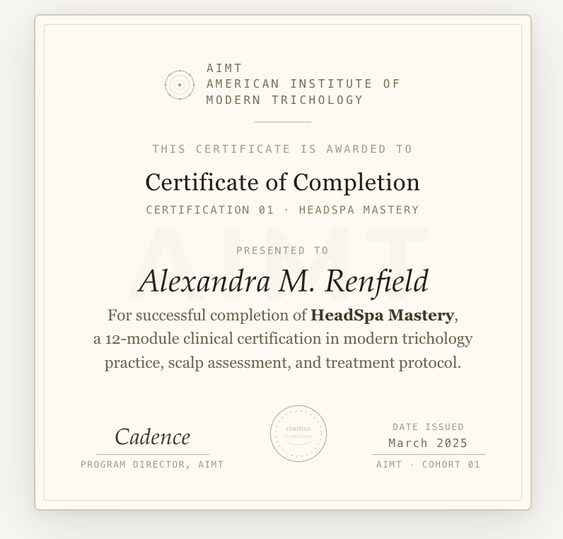
Final Step
If You’re Ready To Refine How You Work, This Is The Next Step.
HeadSpa Mastery gives you a clear framework to assess with confidence, execute with consistency, and lead services at a higher professional standard. If this is the level you want to operate at, enrollment is the next step.
If you’re ready to refine your standard of practice, this is the next step.
AIMT · Head Spa Certification Course
Tell Cadence where you're starting
Head Spa Certification Course
American Institute of Modern Trichology
Welcome back,
Keep building. Your next module is ready.
Certification progress
Head Spa Certification Course
0 of 12 modules complete0%
Course modules
0
Welcome Module
How the course works, what certification means, and the standard ahead
Start
1
Module 1 — Role of the Head Spa Technician
Professional role, scope, limitations, and licensing
Start
2
Module 2 — Welcoming Your Client
Arrival, consent, comfort, and first contact
Start
3
Module 3 — Hair & Scalp Anatomy
The structures and cycles behind what you see
Start
4
Module 4 — Microscopy & Scalp Assessment
A repeatable system for collecting and interpreting visible evidence
Start
5
Module 5 — Scalp Patterns & Service Adaptation
Translate regional findings into cosmetic service decisions
Closing the appointment, menu design, real-cost pricing
Start
10
Module 10 — Sanitation & Reset Systems
Cleaning, maintenance, troubleshooting
Start
11
Module 11 — AI / Modern Practice Tools
Human-led. AI-assisted modern practice.
Start
12
Course Completion & Certification
The standard moving forward
Finish
Module 3 · Hair & Scalp Anatomy
What you see is only the surface.
This is where the course turns technical. Once you understand the structures and cycles beneath the scalp, buildup, shedding, sensitivity, and product response stop looking random.
3.1 — Read beneath the surface
The scalp is not a backdrop. It is the environment everything depends on.
Every product, tool, and hand movement meets a living skin environment before it affects the hair. The scalp follows the same fundamental rules as skin elsewhere on the body, but it contains a dense concentration of follicles, sebaceous glands, nerves, and blood vessels.
That changes the way an experienced practitioner thinks. Instead of reacting to one visible clue, you begin connecting surface appearance with product history, barrier condition, sebum, sensitivity, and hair-cycle timing.
Anatomy is not a list of terms to memorize. It is the map behind better decisions.
From Cadence
"The advantage is not knowing the longest anatomical word. It is knowing which structure makes a visible clue matter—and which conclusions the surface cannot support."
3.2 — The scalp map
Five layers. One surface you can actually touch.
The scalp is commonly described in five layers. The acronym SCALP makes the order easy to remember. Your service takes place at the surface; the deeper layers explain the tissue beneath your hands, not five separate targets to treat.
S — Skin
The epidermis and dermis contain the surface barrier, follicles, sebaceous glands, sensory receptors, and many of the visible clues used during cosmetic assessment.
Treatment-bed relevance: Product choice, cleansing, temperature, exfoliation, and tolerance are judged at this level.
C — Dense connective tissue
A firm fibrous layer containing many of the scalp's vessels and nerves.
Treatment-bed relevance: It helps explain why the scalp is highly vascular and sensitive. It is not a layer a cosmetic service selectively targets.
A — Galea aponeurotica
A broad fibrous sheet connecting the frontal and occipital muscles.
Treatment-bed relevance: It contributes to the way the scalp moves as a tissue unit. Routine massage does not isolate or "treat" the galea.
L — Loose areolar tissue
A deeper glide plane that allows the upper scalp layers to move over the skull.
Treatment-bed relevance: It is anatomical context, not a cosmetic treatment target.
P — Pericranium
The membrane covering the outer surface of the skull.
Treatment-bed relevance: It is not reached or treated during a head spa service.
💡
Anatomy makes pressure more intelligent. It does not turn deeper tissue into a cosmetic claim.
3.3 — The living system beneath the strand
The strand is the output. The follicle is the living system.
The visible hair shaft is made of keratinized, nonliving cells. It can be cleansed, conditioned, protected, and cosmetically damaged—but it does not heal itself.
Beneath the surface, the follicle is a living mini-organ. The lower follicle contains the bulb and surrounds the dermal papilla. The associated sebaceous gland releases sebum into the upper follicular canal, while the arrector pili muscle attaches to the follicular unit.
These structures explain why strand care and scalp care are related but not interchangeable. They also explain why a surface service cannot diagnose or directly treat internal follicle function.
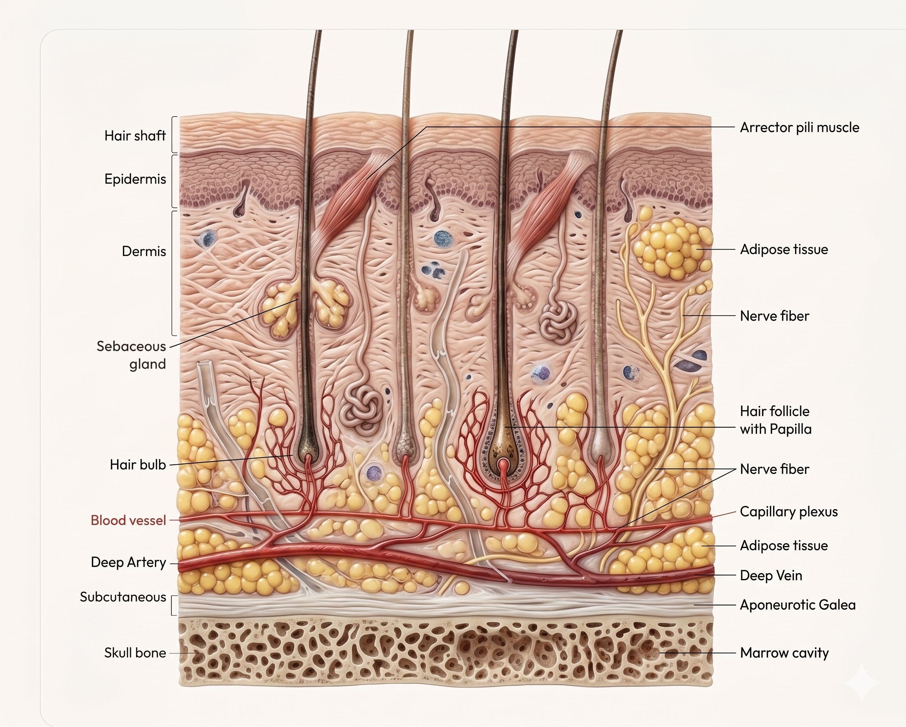
A simplified hair-and-scalp cross-section. Use it to locate the pilosebaceous unit and supporting structures; it is not a complete diagram of all five anatomical scalp layers.
Tap the structure. See what changes at the treatment bed.
Select each area to connect the anatomy with what you can observe, what it changes in service, and what it cannot prove.
Select each structure to expand
What it is: The stratum corneum is the scalp's principal protective and permeability barrier.
What you may observe: Dryness, visible scale, oil, redness, product residue, or an altered surface sheen.
What it changes in service: Cleanser strength, exfoliation choice, water temperature, product load, and whether the service should be simplified.
What not to assume: One surface clue does not establish dandruff, dehydration, infection, inflammation, or the cause of sensitivity.
What it is: The sebaceous gland is part of the pilosebaceous unit and releases sebum into the upper follicular canal.
What you may observe: Material around follicular openings, surface oil, scale, or cosmetic residue.
What it changes in service: How carefully you cleanse, section, rinse, and decide whether exfoliation is appropriate.
What not to assume: Visible material does not prove that a follicle is "clogged" or identify the cause.
What it is: The lower follicle is living tissue involved in producing the hair shaft.
What you may observe: You cannot see the bulb or dermal papilla during a routine surface assessment.
What it changes in service: It keeps hair-growth language honest. Cosmetic care can support cleanliness and comfort at the scalp surface; it does not directly feed, repair, or restart the dermal papilla.
What not to assume: Surface appearance cannot establish why a follicle is shedding, miniaturizing, inflamed, or no longer producing hair.
What it is: The scalp has a rich vascular and sensory supply.
What you may observe: The client's response to pressure, temperature, tenderness, or touch.
What it changes in service: Pressure, pace, positioning, temperature, and the decision to avoid an irritated or painful area.
What not to assume: Temporary warmth or redness does not prove that nutrients have been delivered to follicles or that growth has been stimulated.
→
The expert move is not naming more structures. It is knowing what each structure allows you to conclude.
3.4 — The hair-growth cycle
Hair loss is often a timing problem before it is a pattern problem.
Every follicle cycles independently through growth, transition, rest, and release. That staggered timing is why normal shedding is continuous—and why a major event may not become visible in the hair until months later.
1
Anagen — Growth
The follicle actively produces the hair shaft. Scalp anagen lasts years, which is why scalp hair can grow long.
Practitioner connection: the length of anagen varies. A surface service cannot extend it on command.
2
Catagen — Transition
The lower follicle regresses over a period of weeks and the growing phase ends.
Practitioner connection: catagen is brief and represents transition, not sudden surface damage.
3
Telogen — Relative rest
The follicle remains in a resting phase for roughly several months before the retained club hair is released.
Practitioner connection: a trigger that shifts more follicles into telogen may not produce visible shedding immediately.
4
Exogen — Release
Often described as the shedding portion of the cycle. The club hair separates and sheds from the follicle.
Practitioner connection: shedding is a normal part of cycling. The pattern, amount, timing, duration, and accompanying signs determine whether it deserves closer evaluation.
💡
The event and the shedding may be separated by months. That delay is one of the most useful pieces of history a practitioner can recognize.
Predict before you reveal
A client has a high fever today. When could related shedding become noticeable?
Apply the timing
A client reports diffuse heavy shedding that began about ten weeks after a high fever. Using the hair-growth cycle, explain why the delay matters, what pattern this timing could be compatible with, and how you would explain it without diagnosing.
3.5 — Read the pattern
Do not start with the name. Start with the pattern.
A client may arrive asking for a diagnosis. Your advantage is not guessing the label faster. It is noticing the timing, distribution, duration, and accompanying signs that determine the next professional step.
Delayed diffuse shedding
Pattern: Increased shedding across the scalp beginning several weeks to a few months after a major illness, high fever, surgery, medication change, rapid weight change, childbirth, or another significant physiological stressor.
Practitioner insight: The delay matters. A client may dismiss the relevant event because it did not happen recently.
Professional move: Document the timeline, describe the diffuse pattern, explain that delayed shedding can follow major body changes, and recommend medical evaluation when the shedding is heavy, persistent, worsening, or concerning.
Postpartum shedding
Pattern: Noticeable diffuse shedding beginning in the months after pregnancy as hair cycling shifts again.
Practitioner insight: The shedding can feel sudden because more hairs may release within a similar period rather than in their usual staggered pattern.
Professional move: Normalize that postpartum shedding is common without guaranteeing the cause or timeline. Keep the service gentle and recommend medical evaluation for patchy, painful, severe, persistent, or otherwise concerning loss.
Pattern requiring medical evaluation
Pattern: Patchy or asymmetric loss, rapidly changing density, smooth or shiny areas, significant redness or scale, pain, burning, bleeding, crusting, pustules, broken skin, or loss involving brows or lashes.
Practitioner insight: The most valuable decision may be not to treat the area.
Professional move: Document what is visible, explain the limit of cosmetic assessment, pause or modify the service when appropriate, and refer to a dermatologist or qualified medical professional.
Referral script: "I'm seeing a pattern that deserves a medical evaluation before we treat this area. I can document what is visible, but I can't determine the cause from a cosmetic assessment."
→
A commonly quoted daily shedding range is context—not a diagnostic test. The change from the client's baseline, the pattern, and the timeline matter more than counting one day's hairs.
3.6 — Barrier and surface lipids
Oil, flakes, and tightness are clues—not conclusions.
The stratum corneum is the scalp's principal protective barrier. It helps limit water loss and reduces penetration by outside irritants.
Sebum, sweat, moisture, and other surface components create a thin surface environment often described in cosmetic education as the hydrolipid film. Sebum contributes lubrication, but the barrier is more than surface oil.
This distinction matters because a scalp can look oily and still be irritated, or look flaky for reasons that have nothing to do with inadequate cleansing. Harsh or overly frequent cleansing may contribute to dryness and barrier disruption; it does not prove that the sebaceous glands will automatically produce more oil in response.
Before you reach for a stronger cleanser, ask three questions
1. What does the scalp feel like—comfortable, tight, itchy, tender, or burning?
2. What has been used on it—clarifying shampoo, medicated products, dry shampoo, chemical services, oils, or frequent exfoliation?
3. What else is visible—oil, redness, adherent scale, loose flakes, residue, or broken skin?
From Cadence
"A newer practitioner sees one symptom and chooses one product. A stronger practitioner reads the combination. Flaking plus tightness plus frequent clarifying tells a different story than flaking plus heavy oil and adherent scale."
💡
Treat the pattern you can support cosmetically—not the diagnosis you cannot establish.
3.7 — Massage and anatomy
Massage is technique, not mythology.
Scalp massage is valuable because of how it feels and how well it can be controlled: pressure, rhythm, pace, tissue movement, warmth, and the client's response.
Manual stimulation may temporarily increase local skin blood flow. Limited small studies have explored possible changes in hair thickness, but that evidence does not support promising hair growth, nutrient delivery, follicle activation, or treatment of hair-loss conditions.
The experienced practitioner does not make massage sound more medical to make it sound more valuable. The value is in precise, comfortable, repeatable technique.
What anatomy changes in your hands
Use pressure the client can comfortably receive.
Adjust for tenderness, inflammation, broken skin, recent procedures, and sensitivity.
Do not assume harder pressure reaches a deeper or more beneficial target.
Do not massage an area that should be medically evaluated first.
Keep the purpose clear: controlled manual care, relaxation, comfort, and a cohesive service experience.
From Cadence
"The strongest explanation is also the cleanest: massage is a skilled part of the experience. You do not need a hair-growth promise to justify doing it well."
3.8 — Anatomy in practice
Anatomy should disappear into judgment.
During a service, you will not silently name every layer or phase. The knowledge should run in the background.
You see flakes and ask what else is present before choosing a cleanser. You hear "my hair started shedding" and ask what happened two or three months earlier. You see patchy loss or compromised skin and know that the correct next step may happen outside the treatment room.
That is internalization: the science becomes a faster, calmer decision.
Four questions running in the background
1. What am I actually seeing or hearing? 2. Which structure, cycle, or barrier function helps explain it? 3. What can a cosmetic service responsibly change? 4. What requires a different professional or a different day?
→
You are not collecting anatomy terms. You are reducing guesswork.
Turn anatomy into a decision
A client has scalp tightness and visible flaking after using a strong clarifying shampoo every day. Explain what the scalp barrier and surface lipid film do, what may have disrupted them, and one conservative change you would make to the service.
✦
Module 3 complete
You can now see beneath the surface.
You connected scalp layers, follicle biology, hair-cycle timing, barrier function, and massage claims to real service decisions.
Up next — Module 4
Anatomy gives you the map. Module 4 teaches you how to read the visible scalp in real time through assessment, microscopy, and disciplined observation.
Cadence
Your instructor
● Here when you need me
Module 5 · Scalp Patterns & Service Adaptation
Read the pattern. Adjust the service.
Module 4 taught you how to gather and describe evidence. Now you will turn supported observations, client-reported experience, and regional differences into a cosmetic service plan. The goal is not to assign one permanent scalp type. The goal is to make each step earn its place.
5.1 · From evidence to action
The scalp does not need a label. The service needs a reason.
A useful assessment changes what you do next. It may change how thoroughly you cleanse, whether you exfoliate, how much heat you use, where you place product, how much pressure you apply, or whether you pause the service entirely.
The weak approach is to notice one feature, assign one type, and run the same protocol across the entire scalp. The stronger approach is to combine what is visible with what the client reports, what happened recently, and how each region responds.
One client may show diffuse shine at the crown, fine loose scale near the hairline, and no discomfort anywhere. Another may show very little visible buildup but report burning after a recent product change. Those clients do not need the same service—and neither one can be reduced to one word.
Ask four questions before you choose a step
1. What is visibly present?
2. What does the client report?
3. What is the safest service limit?
4. What should change in this region?
→
Limit first. Priority second. Region by region.
5.2 · What you can actually change
Most protocol changes come from five levers.
Skilled customization is usually not a completely different service. It is a deliberate change in intensity, placement, duration, or omission.
1. Cleansing
Decide how thorough the cleanse should be, whether one region needs more attention than another, and whether repeating a cleanse is appropriate. More lather is not the goal. A clean, comfortable finish is.
2. Exfoliation
Decide whether exfoliation belongs at all. If it does, choose the region, method, intensity, and contact time carefully. Visible scale is not automatic permission to exfoliate.
3. Water and steam
Adjust temperature, duration, and distance. Heat can increase comfort for some clients and increase discomfort for others. Steam is optional—not proof that the service is more advanced.
4. Pressure and tempo
Adjust mechanical stimulation to the client's comfort and the current region. Pressure is not a corrective tool. Firm massage should never be used to overpower tenderness, burning, or a reactive presentation.
5. Product placement and finish
Choose where product belongs, how much is needed, and whether the finish should be lightweight, conditioning, or minimal. Whole-scalp application is not automatically more thorough.
Product comes after the decision.
Do not choose the protocol because you want to use a particular product. Choose the service direction first, then select a compatible product category within your license, training, and manufacturer instructions.
5.3 · Priority order
The safest limit outranks the client's request.
Clients may ask for the deepest cleanse, the strongest exfoliation, maximum steam, or firm pressure. Their preference matters—but it does not override what the assessment and consultation tell you is appropriate today.
1. Safety limit
Is there any reason to avoid the area, pause, or refer? Broken, bleeding, weeping, oozing, draining, pustular, severely painful, rapidly worsening, or otherwise concerning findings do not need a stronger cosmetic protocol.
2. Client comfort and reactivity
Ask about stinging, burning, tenderness, itching, heat, tightness, recent chemical services, scratching, friction, or a recent product reaction.
3. Surface tolerance
Consider whether cleansing, exfoliation, heat, or friction is likely to make the current presentation less comfortable.
4. Visible cosmetic need
Decide what oil, residue, loose scale, or regional difference can be addressed conservatively within the service.
5. Client preference and maintenance goal
Once the limits are clear, shape the experience around the client's comfort, maintenance needs, and desired level of relaxation.
From Cadence
"The strongest service is not the one with the most steps. It is the one in which every step has a reason and nothing is added simply to prove value."
5.4 · Patterns, not permanent types
Read the dominant need without forcing the whole scalp into it.
A
Baseline / maintenance presentation
What may be presentNo dominant cosmetic concern, no meaningful regional difference, and no reported discomfort. The client may simply want relaxation, maintenance, and a consistent routine.
Context still neededWash timing, recent product use, service goal, allergies, sensitivities, and any recent chemical service.
Responsible directionPreserve. Use a gentle, non-disruptive cleanse, avoid unnecessary exfoliation, and let the service focus on comfort and maintenance.
Do not concludeThat the scalp has one universal "healthy" color or that every corrective step should be added because the client paid for a premium service.
B
Oil-dominant or residue-present presentation
What may be presentDiffuse shine, slick roots, visible coating, adherent surface material, or heavier material in selected regions.
Context still neededWash timing, dry shampoo, root products, exercise, sweat, work environment, headwear, recent styling products, and whether the material changes after cleansing.
Responsible directionCleanse thoroughly but proportionately. Use targeted product placement, repeat cleansing only when appropriate, consider compatible localized exfoliation when the surface is intact and comfortable, rinse fully, and avoid leaving an unnecessarily heavy finish.
Do not concludeThat the follicles are clogged, that visible material is definitely sebum, that hair growth is being blocked, or that cleansing will trigger guaranteed compensatory oil production.
C
Fine-scale / dry-appearing presentation
What may be presentA matte surface, fine loose scale, little visible surface shine, or a client report of tightness.
Context still neededItching, burning, tenderness, cleansing frequency, shampoo type, chemical services, weather, heat styling, recent product changes, and whether scale is loose or adherent.
Responsible directionLower unnecessary cleansing intensity, use comfortable water temperature, reduce friction, choose a compatible conditioning or hydration-supportive cosmetic product, and exfoliate only when the area is intact, comfortable, and appropriate for the product and service.
Do not concludeThat the image proves dehydration, a damaged barrier, dandruff, dermatitis, or a need for exfoliation.
D
Mixed regional presentation
What may be presentShine or residue in one region and fine scale, matte appearance, or greater sensitivity in another.
Context still neededRegional product placement, wash habits, dry shampoo use, chemical-service history, styling patterns, friction, and symptoms by area.
Responsible directionMap the regions. Cleanse, exfoliate, condition, or reduce stimulation only where each decision is earned. One client may receive more thorough cleansing at the crown, a gentler approach at the hairline, and a maintenance approach elsewhere.
Do not concludeThat one dominant feature should control the protocol across the entire scalp.
E
Reactive presentation or sensitivity reported
What may be presentA visible difference from surrounding baseline combined with client-reported stinging, burning, tenderness, itching, heat, tightness, or a recent reaction.
Context still neededRecent chemical service, product change, heat exposure, scratching, friction, known allergies, symptom severity, broken skin, drainage, pustules, crusting, or rapid worsening.
Responsible directionReduce stimulation. Lower heat, use cooler or comfortably lukewarm water, avoid aggressive exfoliation, avoid firm massage over the area, and use fewer familiar compatible products. Pause or refer when the presentation falls outside cosmetic service limits.
Do not concludeThat visible color alone proves sensitivity, inflammation, infection, or the medical cause.
One scalp. Different regional needs.
Crown: greater visible shine and surface coating may support more targeted cleansing.Hairline or temporal area: a matte, fine-scale appearance may call for a gentler service direction.
Illustrative service-planning example. Appearance alone does not establish cause or diagnosis.
Signature interaction
What changes first?
Choose the first responsible service direction. You are not diagnosing the scalp. You are deciding what the current evidence allows you to do next.
Scenario 1. The five-point assessment shows no dominant concern or meaningful regional difference. The client reports no discomfort and wants a relaxation-focused service.
Scenario 2. The crown shows diffuse shine and visible surface residue. The sides and hairline look close to the client's baseline. The client reports no burning, tenderness, or recent reaction and says they used dry shampoo this morning.
Scenario 3. The hairline shows fine loose scale. The client reports burning after starting a new product three days ago.
Scenario 4. One assessment area is broken, moist, and visibly draining.
5.5 · One appointment, more than one approach
The protocol can change without the service feeling fragmented.
Regional customization should feel intentional, not improvised. Use the same service structure, then adjust the levers by area.
You might cleanse the crown more thoroughly, skip exfoliation near a reactive hairline, lower pressure at the temples, and use a lighter finish at the roots. The client still experiences one cohesive service. The practitioner simply stops pretending that every square inch has the same need.
Preserve
Keep the steps and regions that are already appropriate. Do not remove a comfortable, effective part of the service just because another area needs modification.
Modify
Change intensity, placement, duration, temperature, pressure, or product amount.
Avoid
Omit a step that is unnecessary, incompatible, or likely to increase discomfort.
Pause
Stop when new symptoms, visible changes, contamination, or client discomfort make continuing inappropriate.
Refer
Recommend medical evaluation when the presentation is outside cosmetic assessment or service limits.
Practitioner note
Document the regional decision in plain language: what you observed, what the client reported, and what you changed. Do not document a diagnosis you are not qualified to make.
Regional customization may change product placement and cleansing intensity without changing the entire service.
Midpoint check
During the five-point assessment, the crown shows diffuse shine and visible surface residue, while the sides and hairline show fine loose scale and little visible shine. The client reports no burning, tenderness, or recent reaction. How would you adapt the service by region, and what whole-scalp mistake are you avoiding?
5.6 · Choose a function, not a fantasy
The right product is the one that supports the decision you already made.
Product knowledge matters, but product enthusiasm can distort judgment. A practitioner who starts with the bottle often finds a reason to use it. Start with the service need instead.
Choose a product category based on what the current region can tolerate and what you are trying to accomplish cosmetically.
Gentle routine cleansing
Appropriate when the goal is maintenance, comfort, or a non-disruptive reset.
Targeted or more thorough cosmetic cleansing
Appropriate when visible oil or residue and client history support a stronger cleanse in selected regions.
Optional compatible exfoliation
Appropriate only when the skin is intact, the client is comfortable, the method is within scope, and the product directions support its use.
Conditioning or hydration support
Appropriate when the goal is comfort, slip, softness, or a less stripping finish. Do not describe the product as treating a medical barrier disorder.
Minimal-product service
Appropriate when the client reports recent reactivity, when product history is unclear, or when adding more variables would make the response harder to interpret.
⚠️
Boundary note. Specific ingredients, medicated claims, and condition-directed products may carry license, labeling, contraindication, or manufacturer requirements. Follow the product—not a social-media protocol.
5.7 · Intensity is part of the protocol
More heat, more pressure, and more time do not equal more expertise.
Steam
Steam may support comfort or help soften some surface product and residue, but it is optional. Reduce or omit it when the client reports heat sensitivity, burning, tenderness, or a recent reaction. Do not say steam opens pores or detoxifies the scalp.
Water temperature
Comfortably lukewarm is a useful default. Use cooler water when heat increases discomfort. Avoid very hot water on a reactive or uncomfortable area.
Pressure
Pressure should remain controlled and responsive to client feedback. Do not use firm massage as a corrective response to oil, scale, or residue.
Time
Longer contact is not automatically better. Follow manufacturer directions and use the shortest effective step that supports the service goal.
→
The protocol is not the number of steps. It is the quality of the decisions between them.
Lower pressure, less product, and reduced stimulation can be deliberate protocol decisions.
5.8 · Client communication
Redirect the method without dismissing the goal.
Clients often ask for intensity because they associate intensity with results. Your job is not to argue with the goal. Your job is to explain why a different method is the better fit today.
Explain what you observed, what the client reported, and why the service plan changed.
Mixed-regional script
"Your scalp is not presenting the same way in every area today. I'm going to cleanse the crown more thoroughly, keep the hairline gentler, and adjust the product placement so we do not overcorrect the areas that do not need it."
Lower-intensity script
"You asked for the deepest version of the service. Based on what you're feeling and what I'm observing, the stronger exfoliation, maximum steam, and firm pressure are not the best fit today. I can still give you a complete service, but I'm going to lower the heat, reduce stimulation, and focus on a gentle cleanse and comfort."
Pause-and-refer script
"I'm seeing an area that is not appropriate for cosmetic treatment today. I do not want to aggravate it or guess at the cause, so I recommend having it evaluated before we continue with scalp services."
From Cadence
"Client satisfaction is not created by saying yes to every requested step. It is created by giving the client a clear reason, a thoughtful alternative when one is appropriate, and a service plan you can defend."
5.9 · Errors that make protocols less intelligent
The most common mistake is treating the label instead of the client.
✗
Label first
The mistakeChoosing "oily," "dry," or "sensitive" before gathering regional evidence and client history.
Better moveGather the regional evidence and client context first, then choose the service direction each area actually supports.
✗
Product first
The mistakeBuilding the explanation around the product you want to use instead of the need you are trying to address.
Better moveDefine the service need first, then choose a compatible product category that supports that decision.
✗
Whole scalp, one intensity
The mistakeApplying the strongest regional need across every assessment area.
Better moveMap the regions and adjust cleansing, exfoliation, heat, pressure, and product placement only where the evidence supports it.
✗
Exfoliating every flake
The mistakeTreating visible scale as proof that exfoliation is required.
Better moveCheck comfort, skin integrity, client history, and product suitability before deciding whether exfoliation belongs at all.
✗
Strongest means best
The mistakeAssuming maximum steam, repeated cleansing, firm pressure, or more product creates a more valuable service.
Better moveUse the level of cleansing, heat, pressure, time, and product placement the current service goal actually requires—not the maximum available.
✗
Image becomes diagnosis
The mistakeTurning shine, scale, residue, or color change into a medical conclusion.
Better moveDescribe what is visible, ask for the missing context, and keep the conclusion inside cosmetic observation.
✗
Client request becomes permission
The mistakeContinuing an inappropriate step because the client asked for it.
Better moveExplain the safer modification, or pause the service when the requested step exceeds the current service limit.
✗
Improvement becomes cure
The mistakeDescribing a cleaner appearance or more comfortable service as proof that a condition was treated.
Better moveDescribe the cosmetic change you can observe or the comfort the client reports without claiming that a condition was treated or cured.
A strong protocol is explainable.
You should be able to name what you observed, what context changed your interpretation, what you modified, and what you intentionally left out.
Final check
A client reports stinging and tenderness, and you observe a reactive-appearing area. They still ask for the strongest exfoliation, maximum steam, and firm massage. What would you say, how would you modify or pause the service, and what would make you refer instead of proceeding?
✦
Module complete.
Assessment becomes skill when it changes the service responsibly.
You can translate regional observations and client feedback into a cosmetic service plan without forcing the scalp into one label.
You can identify the safest limit, choose the current priority, adapt the five service levers by region, explain a modified plan, and recognize when to avoid, pause, or refer.
Up next — Module 6
Next, you will examine named scalp conditions and the presentations that are commonly confused with cosmetic patterns. The goal will remain the same: observe carefully, stay within scope, and know when medical evaluation belongs in the plan.
Module 4 · Microscopy & Scalp Assessment
Stop assuming. Start seeing.
Magnification does not hand you a diagnosis. It gives you a better view. This module teaches a repeatable five-point scan, disciplined observation, and the moment a cosmetic service should be customized, simplified, paused, or referred.
4.1 — The role of magnification
A closer view is not a final answer.
A scalp camera can reveal details that are easy to miss with the unaided eye: surface shine, scale, residue, material around follicular openings, hair-shaft variation, and differences from one region to another.
That does not mean the device knows what caused what you see. Medical trichoscopy is a clinical diagnostic technique interpreted alongside history, examination, and other medical information. In a head spa, scalp microscopy is a cosmetic observation and education tool.
Its value is precision—not certainty. It helps you collect better evidence before you choose a cosmetic service direction.
→
The image can sharpen the question. It cannot answer every question.
From Cadence
"A weak assessment names the scalp too quickly. A strong assessment collects the view, compares regions, asks for context, and lets the service decision remain no more certain than the evidence."
4.2 — Presenting the assessment
Make the lens feel informative—not invasive.
Tell the client what the camera is for before it touches the scalp. The assessment should feel like part of customization, not a search for something wrong.
Live-view script
"Before we begin, I'm going to look at several areas of your scalp under magnification. I'll use what is visible—along with what you tell me—to customize the cosmetic service. The camera helps us see detail, but it does not diagnose a scalp condition."
Image-capture consent script
"I can use the camera for a live view without saving anything. I can also capture comparison images for your service record. Would you like me to save them, and may I explain how they will be stored and used?"
Privacy note
Permission to view is not permission to save. Permission to save for the client record is not permission to post, teach from, transmit to another service, or use in marketing.
→
Client-language rule: Show the image without making the client feel dirty, damaged, or alarmed. Describe the finding. Explain the cosmetic decision. State the limit when the cause cannot be determined.
4.3 — Image integrity
A useful image begins before the lens touches the scalp.
Magnification can exaggerate a poor setup. Standardize the conditions before you interpret the screen.
1. Start before treatment
Assess before water, exfoliants, oils, masks, steam, or treatment products alter the surface.
2. Ask what is already on the scalp
Record wash timing, dry shampoo, root sprays, oils, fibers, medicated products, chemical services, and recent scratching or irritation.
3. Part cleanly
Create a clear view without scraping or repeatedly disturbing the same area.
4. Touch lightly
Rest the device steadily. Excess pressure can blanch or redden the skin and create the finding you think you discovered.
5. Hold the view
Stay long enough to inspect the image. A constant visual sweep produces motion, blur, and shallow interpretation.
6. Make comparisons honest
Match region, magnification, light, pressure, orientation, and device settings when comparing two images.
Sanitation note
Clean and disinfect reusable contact surfaces before and after each client according to the manufacturer's instructions and applicable rules. Do not place the device on broken, bleeding, weeping, oozing, or draining skin.
⚠️
If the setup changes, the image changes. Document the difference before you call it improvement.
4.4 — The five-point scalp scan
Five assessment points prevent one-angle thinking.
The scalp is not uniform. AIMT's baseline scan uses the same five assessment points in the same order so the practitioner does not let one dramatic image represent the entire head.
→
Memory line: Front. Top. Crown. Side. Back.
Use the arrows or select an assessment point directly
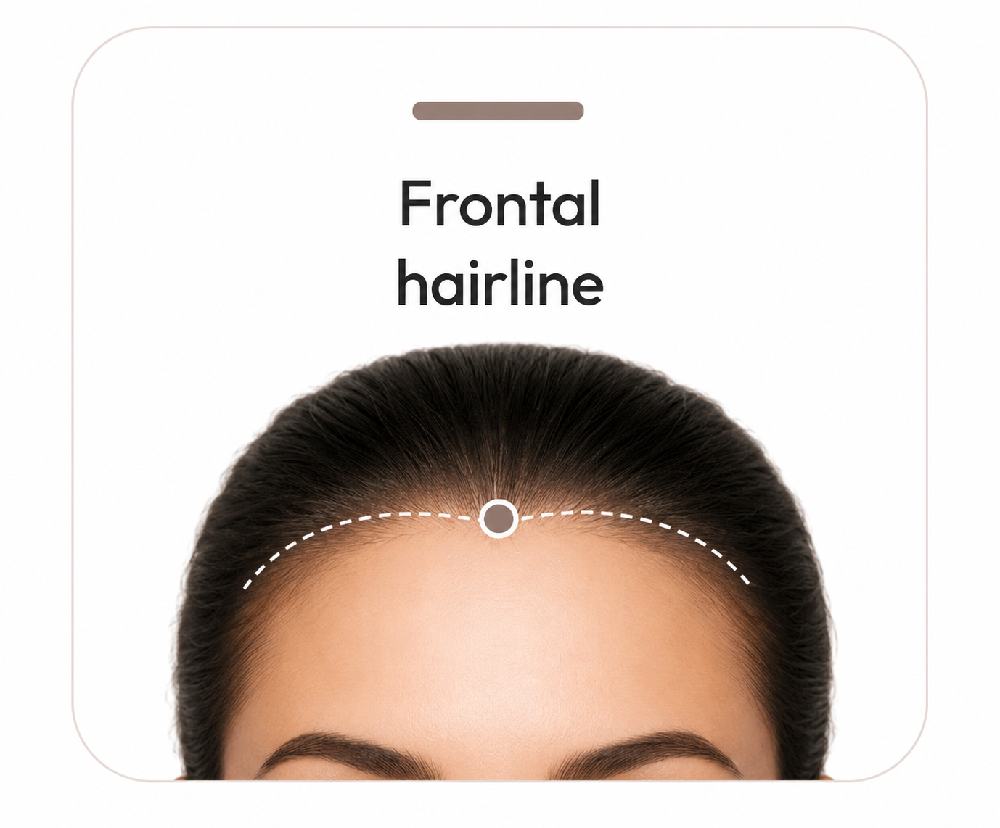
Assessment Point 1 of 5
Frontal hairline
PurposeEstablish the visible condition along the hairline, where styling products, cosmetics, tension, scale, and client concerns may be easiest to notice.
Technique cueSeparate hair gently and avoid rubbing the hairline before the image is captured.
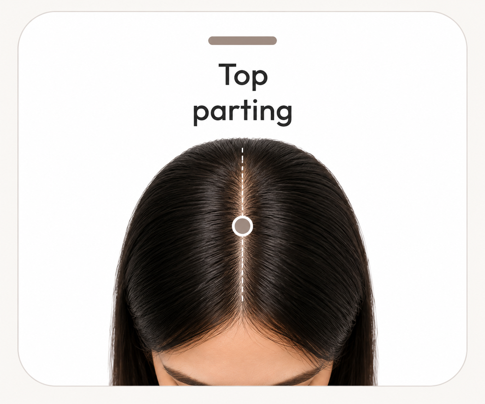
Assessment Point 2 of 5
Top parting
PurposeCollect a consistent central view of the scalp surface, follicular openings, and hair distribution along the part.
Technique cueUse the same part location when creating a future comparison.
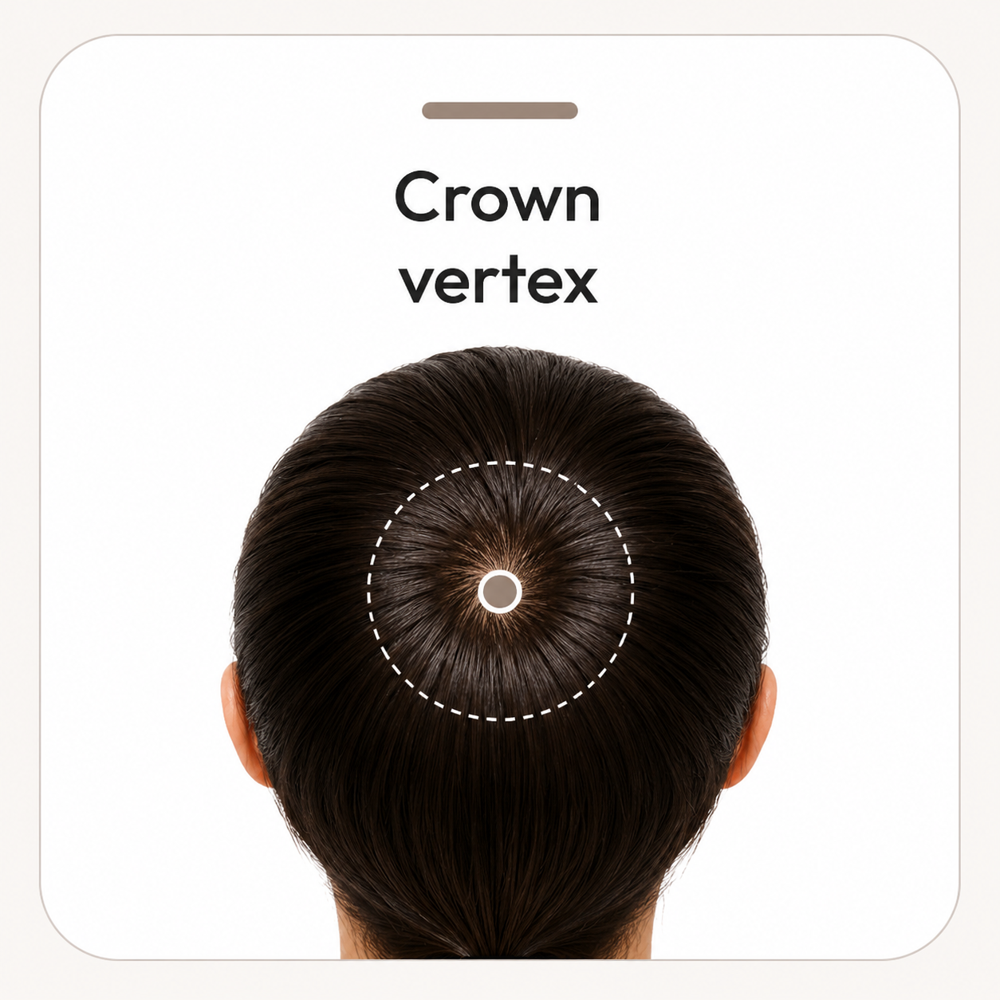
Assessment Point 3 of 5
Crown / vertex
PurposeCompare the crown with the parting and hairline rather than assuming the central scalp presents uniformly.
Technique cueWork with the natural swirl instead of forcing the shafts flat across the view.
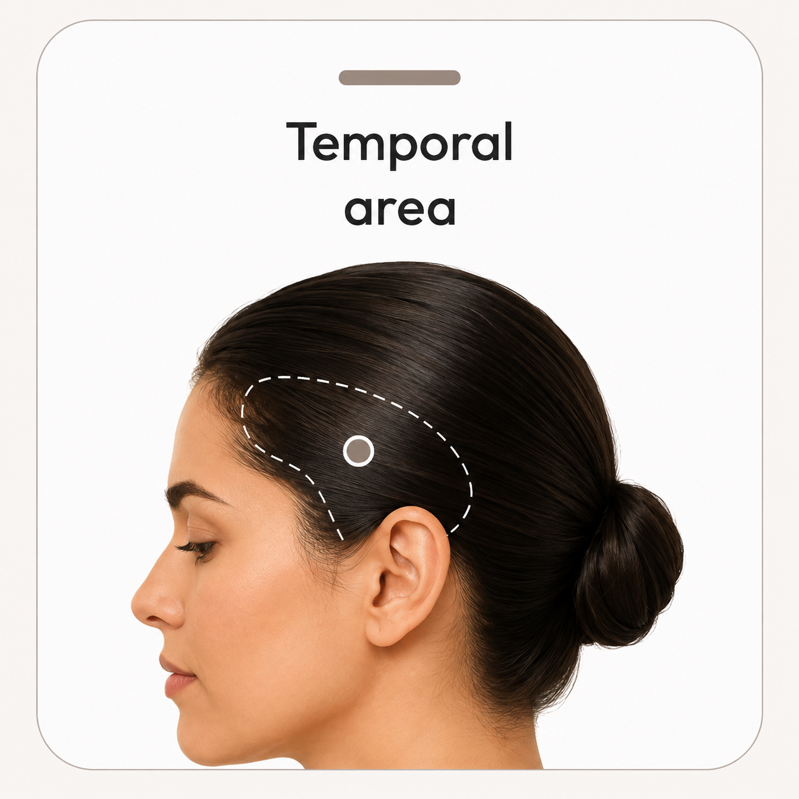
Assessment Point 4 of 5
Temporal area
PurposeObserve a lateral region and compare it with the central scalp.
Technique cueCheck the opposite side when asymmetry, tension, tenderness, or localized concern is reported.
This assessment point uses a separate location-guide photo, not the same client shown in the other four assessment points — each image is an independent procedural reference.
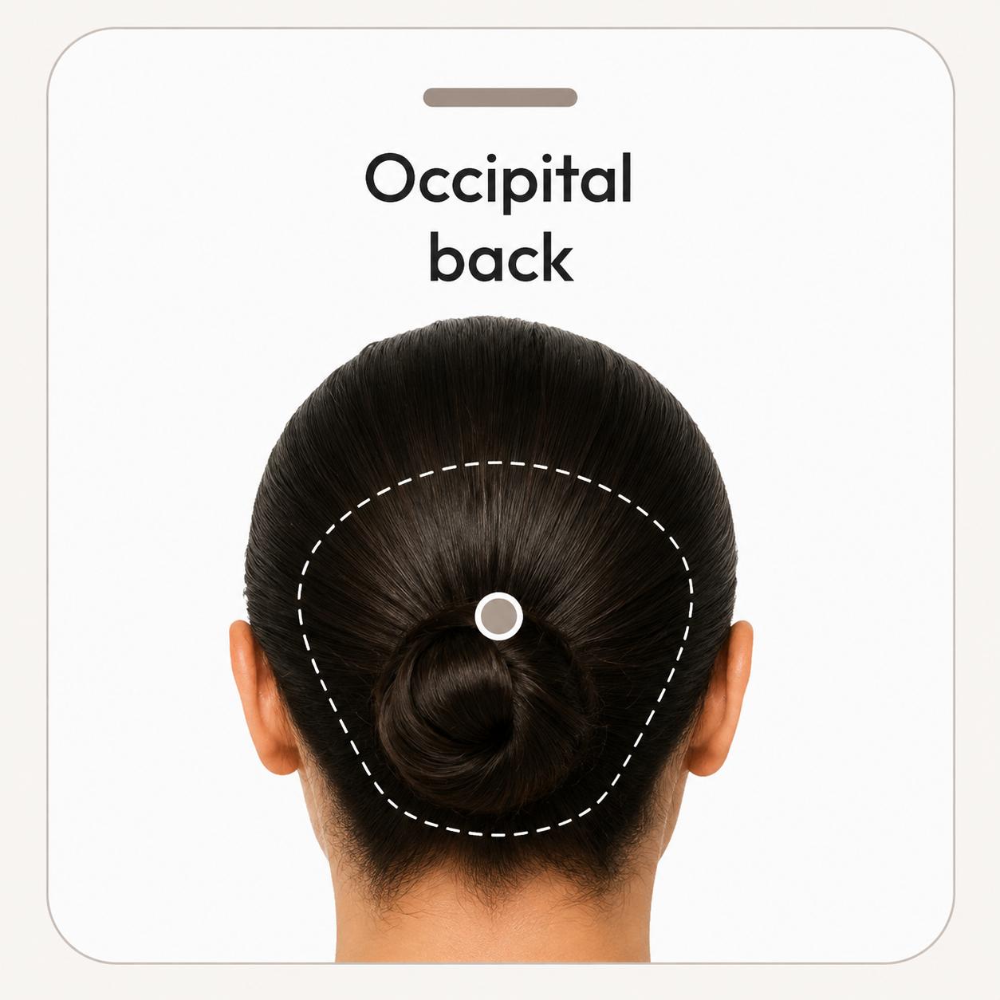
Assessment Point 5 of 5
Occipital / back
PurposeInclude the hidden posterior scalp, which may look different from the areas the client sees and styles most often.
Technique cuePosition the hair securely so the lens remains steady and the client does not have to hold an uncomfortable posture.
A five-point scan creates the baseline. The client's concern tells you where to add targeted views.
4.5 — The five observation lenses
Do not label the scalp. Read the evidence.
Use the same five lenses at every assessment area. They keep the assessment specific enough to be useful and restrained enough to remain honest.
1. Scalp surface
Look for: Color relative to the client's surrounding baseline, sheen, loose or adherent scale, visible coating, residue, and whether the skin is intact.
Document like this: "Diffuse surface shine at the crown with small areas of adherent yellow-white material."
2. Follicular openings
Look for: Whether openings are visible and whether material is present at or near them.
Document like this: "Several openings show visible material around the emerging shafts."
Do not write: "The follicles are clogged."
3. Perifollicular area
Look for: Color change, scale, or visible material immediately surrounding a follicle.
Document like this: "Color change and fine scale are visible around several follicles in this assessment area."
4. Hair shafts
Look for: Visible breakage, coating, residue, variation in shaft appearance, and the number of shafts visible in the field.
Document like this: "Short and longer shafts are visible in the same field; several shafts have surface residue."
Limit: One image cannot establish the cause of breakage, thinning, or shaft variation.
5. Distribution
Look for: Whether the finding is localized, diffuse, symmetric, or different from another assessment area.
Document like this: "The crown shows more surface shine and residue than the frontal hairline."
→
Distribution is often more useful than the most dramatic close-up. One image is a detail. The scan is the pattern.
Observation discipline
Say only what the image earned.
Classify each statement as a supported observation, a working question, or an unsupported conclusion.
"The crown shows diffuse shine and visible yellow-white material around several follicular openings."
"Could the visible material be influenced by dry shampoo, root spray, oil, or wash timing?"
"The client's follicles are clogged because they do not shampoo enough."
"The temporal area looks darker and the client reports burning, so I would avoid stimulation there and ask whether this is new."
"This is seborrheic dermatitis."
Strong assessment language is precise about what is visible and disciplined about what remains unknown.
Read the full scan
During a five-point scan, the crown appears shiny with visible material around several follicular openings, while the frontal hairline looks matte with fine loose scale. The client reports no pain or burning. Describe what you would document, explain why one label for the entire scalp would be weak, and name one question you would ask before deciding how to adjust the service.
4.6 — Appearance examples
Patterns overlap. That is why labels fail.
These images build visual vocabulary. They are illustrative magnified examples, not authenticated clinical captures and not proof of a diagnosis. Use each one to practice description, questioning, and restraint.
Illustrative examples
Actual scalp appearance varies by client, skin tone, lighting, magnification, device, product history, and image conditions.
1
Baseline-appearing view
Illustrative magnified example — not a clinical diagnosis
What is visibleRelatively even surface appearance, visible follicular openings, minimal obvious scale or coating, and no pronounced localized color change in the field.
Context neededThe client's own baseline, product use, sensation, and comparison with the other four assessment areas.
May changeAvoid unnecessary correction. Preserve what is working and follow the client's cosmetic goals.
Does not proveThat the scalp is universally "healthy," medically normal, or free of a condition outside the camera's view.
Illustrative magnified example — not a clinical diagnosis
What is visibleA more matte surface with fine loose scale and less obvious surface shine in the field.
Context neededTightness, itching, burning, cleansing frequency, recent clarifying, chemical services, weather exposure, and comparison with other regions.
May changeIt may support a gentler, simplified service while avoiding aggressive cleansing or exfoliation.
Does not proveDehydration, barrier damage, dandruff, dermatitis, or the medical cause of scale.
Illustrative magnified example — not a clinical diagnosis
What is visibleColor variation relative to the surrounding field, with possible scale or visible material around some follicles.
Context neededPain, burning, itching, heat, recent product or chemical exposure, scratching, friction, and whether the color changed after device contact.
May changeReduce pressure, heat, friction, exfoliation, and product load. Avoid the area when the client reports discomfort or the skin appears compromised.
Does not proveSensitivity, inflammation, allergy, infection, or a specific condition.
The camera shows the material. The consultation helps explain it.
Oil-dominant appearance
Surface residue / buildup
Both images show shine or material near follicular openings. The microscope cannot determine the material's composition from appearance alone.
Before calling it oil, scale, or product buildup, ask:
• When was the hair last washed?
• What products are used at the root?
• Is the client experiencing tightness, itching, burning, tenderness, or rapid oil return?
• Is the appearance present across the scalp or concentrated in one region?
• Does a gentle cleanse change what is visible?
→
When two possible stories look similar, ask a better question instead of choosing a stronger label.
4.7 — From image to decision
The image earns its place by changing what happens next.
Assessment is not a performance. It should support one of four professional decisions.
Preserve
The visible surface is intact, the client is comfortable, and no finding calls for correction.
Action: Avoid over-treating. Follow the client's cosmetic goals.
Modify conservatively
Oil, scale, residue, or regional variation is visible without broken skin, marked pain, drainage, or a concerning loss pattern.
Action: Adjust cleansing, exfoliation, temperature, pressure, and product load conservatively. Module 5 develops these treatment directions.
Avoid or pause an area
A localized region shows discomfort, pronounced color change, recent irritation, tenderness, or uncertainty.
Action: Do not overwork it. Simplify, omit the area, or postpone that part of the service.
Stop and refer
The scalp shows nonintact, draining, pustular, severely painful, hot, swollen, rapidly changing, patchy, smooth, shiny, or scar-like findings.
Action: Do not continue a cosmetic service over the area. Explain the limit of the assessment and recommend medical evaluation.
→
The advanced decision is not always a more complex treatment. Sometimes it is less treatment. Sometimes it is no treatment today.
4.8 — When not to proceed
The most important image may be the one that ends the service.
Nonintact or draining skin
Broken, bleeding, weeping, oozing, pustular, crusted, or visibly draining areas. Response: Stop camera contact and do not continue the cosmetic service over the area.
Marked pain or inflammatory appearance
Heat, swelling, severe tenderness, intense burning, or pain that seems disproportionate. Response: Do not massage through pain or use the service to test whether the area improves.
Concerning hair-loss pattern
Rapidly changing density, patchy loss, smooth or shiny areas, scar-like appearance, or loss involving brows or lashes. Response: Describe and document what is visible without naming the condition. Recommend medical evaluation.
Uncertainty outside cosmetic scope
A finding may not fit a course example, or several warning signs may overlap. Response: You do not need the diagnosis to know that the service should pause.
Referral script
"I'm seeing an area that should be medically evaluated before we continue a scalp service over it. I can document what is visible, but I can't determine the cause from a cosmetic assessment. Once it has been evaluated, we can decide what kind of service is appropriate."
⚠️
Device-contamination note: If the device contacted a draining, bleeding, or otherwise compromised area, remove it from service and follow the manufacturer's required cleaning and disinfection procedure before reuse.
4.9 — Practitioner insight
The device can create the evidence you think you found.
Pressure changes color
Excess contact can blanch or redden the scalp. Capture the baseline before repeated contact alters it.
A dirty lens creates a false story
Haze, residue, oil, or scale on the device can appear to belong to the client. Inspect and prepare the lens before the scan.
Products can imitate pathology
Dry shampoo, fibers, root spray, oils, masks, and medicated products can change surface appearance. Ask before you interpret.
One image is not the scalp
A dramatic crown image does not erase a calm hairline, and a clean hairline does not represent the hidden posterior scalp.
Before-and-after requires matching conditions
Different light, angle, pressure, magnification, or location can create a more dramatic "result" than the service did.
→
Quick reality check: Microscopy does not become advanced when the image is dramatic. It becomes advanced when the collection method is consistent and the interpretation is restrained.
4.10 — Common mistakes
What to unlearn before the camera makes it look convincing.
✗
Naming the scalp after one image
The fixComplete the five-point scan and compare distribution before forming a working service direction.
✗
Pressing for a clearer view
The fixImprove parting, stability, focus, lighting, and lens cleanliness—not pressure.
✗
Turning visible material into a cause
The fixDescribe location, color, texture, and distribution. Ask about product and wash history.
✗
Saving images without clear permission
The fixSeparate consent for live view, record capture, teaching, marketing, and external sharing.
✗
Creating a misleading before-and-after
The fixMatch region, magnification, light, pressure, and orientation.
✗
Performing assessment that changes nothing
The fixThe image should support preserve, modify, avoid, pause, or refer. Otherwise it is theater.
→
The microscope is not the skill. The collection method, language, and decision are the skill.
Know when the image ends the service
During the crown assessment, you see a cluster of raised lesions with visible fluid and crusting. The client says the area does not bother them and asks you to continue. Explain what you do with the microscope and the service, what you say to the client, and why.
✦
Module 4 complete
You can collect evidence before making a decision.
You demonstrated a standardized five-point scan, disciplined observation language, regional comparison, image-consent awareness, and pause/referral judgment.
Up next — Module 5
Module 4 taught you how to gather and describe the evidence. Module 5 teaches you how to translate appropriate findings into a cosmetic treatment direction without collapsing the entire scalp into one label.
Welcome Module
Clients can feel the difference between a service that is being performed and one that is being led.
Your job is to lead it. Before technique begins, this module establishes how the course works and the professional standard behind every service decision that follows.
0.1 — Welcome
Why this course exists.
I'm Cadence, the course guide built to help you work through AIMT's curriculum, test your reasoning, and connect each concept to real service delivery. The course itself was built from nearly two decades of hands-on work across cosmetology, esthetics, elevated client experience, service design, and scalp-focused care. It was created to solve a problem that appears throughout head spa education: students are often given pieces, but not a complete working system.
You might learn what a head spa is. You might see tools. You might get a general idea of the experience. But that is not the same as knowing how to perform the service well — how to guide the client through it confidently, adjust when something feels off, and create something that feels intentional from beginning to end.
That is what this course is for. A working framework built through real services on real clients — not just the order of the service, but the logic behind it. Why transitions matter. How to pace the room. How to build trust. How to make decisions in real time. This is not theory dressed up as expertise. It is a working framework built through repetition, observation, and refinement.
0.2 — What this course is
A framework. Not a script.
This course is a complete service framework. It teaches you how to think through the head spa experience as a practitioner — not just copy movements or memorize a sequence. You will learn service structure, client flow, assessment thinking, scalp pattern recognition, treatment logic, setup, positioning, and sanitation.
Just as important — you will learn how to stay in your lane. You are not being trained to diagnose or treat medical conditions. You are being trained to observe, recognize patterns, educate appropriately, and know when not to proceed. That distinction matters.
What this course is not
This is not the only way to perform a head spa. Rigid systems create fragile practitioners. The goal here is understanding — not imitation — so you can adapt based on your space, your tools, your client, and your scope.
What your certificate represents
Completing AIMT's Head Spa Certification Course means you have worked through the required curriculum and demonstrated the course competencies. Your certificate documents that achievement. It is not a state license, a medical credential, or permission to work beyond the services your existing license and local laws allow. Your licensing authority, local regulations, and professional scope remain the standard you must follow.
0.3 — Who this is for
The person who wants more than inspiration.
There is a difference between watching head spa content and performing a head spa service professionally. This course is built for the person who wants to know what to do, what not to do, what to look for, what to say, and how to make the service feel consistent every time.
Inspiration is easy. Repetition, structure, judgment, and execution are what make a real practitioner.
0.4 — What you'll learn
You are not just learning steps. You are learning how those steps connect.
The course is structured in layers, because strong services are built — not assembled. You will move through orientation and scope, client experience, anatomy and assessment, scalp types and treatment thinking, conditions and disorders, tools and setup, full service execution, sanitation, and pricing.
A common mistake
Jumping straight to the experience before understanding the structure underneath it. That leads to inconsistency. A strong service is not a collection of premium parts. It is a system.
0.5 — How to use this course
Move through it in order. Use it actively.
Each module supports the next. If you skip scope, you are more likely to overstep in consultation. If you rush anatomy, your assessment reasoning becomes weaker. If you ignore setup, the service flow breaks down.
The course is self-paced, but it is not designed to be rushed. Pause for the practice moments. Answer checkpoints from your own reasoning. Use Cadence to question, clarify, and strengthen your thinking—not to write the answer for you. Physical technique still requires repetition outside the screen.
From Cadence
"As you move through the course, don't stop at 'what do I do here?' Ask why it matters, what problem it solves, and what should change when the client or scalp in front of you does not match the ideal example. That is where professional judgment begins."
Practice — ungraded
Same steps. Different service.
Both practitioners know the service sequence. Which one is leading the experience?
0.6 — The standard
Five principles this course is built on.
1
The service should feel controlled, not chaotic
Why it mattersClients may not know why something feels off — but they feel it immediately. Sloppy transitions, hesitation, and inconsistent touch all break trust. A premium experience is the result of structure, not magic.
2
Observation comes before assumption
Why it mattersStrong practitioners look first, then decide. Weak practitioners decide what they think is happening before they actually look. That is how people misread scalp conditions, overuse products, and talk themselves into the wrong protocol.
3
Relaxation and professionalism can coexist
Why it mattersCalm does not mean careless. The service can be deeply sensory while still being prepared, well-paced, hygienic, and professionally responsible. Those qualities support one another.
4
Human touch matters more than tools
Why it mattersTools can support precision, consistency, comfort, and sensory interest. They cannot replace prepared hands, attentive pacing, clear communication, or professional judgment. Tools are optional. Intentional delivery is not.
5
Restraint is part of expertise
Why it mattersNot every situation requires action. Some require pause. A professional knows when to adjust, when to simplify, and when to refer out. You do not prove skill by pushing through situations you should have stopped.
0.7 — What makes a great technician
A great technician is not just someone with good hands.
They know how to hold the room, observe, ask, confirm, and adjust, make decisions when things don't match expectations, explain simply, and repeat quality consistently. That last one is what builds a business.
Hold the room
Guide the pace, comfort, transitions, and emotional tone of the service from the moment it begins.
Observe
Notice scalp appearance, client feedback, body language, temperature response, and sensitivity—then ask, confirm, and adjust instead of assuming.
Make decisions
Adjust within scope, simplify the protocol, or pause and refer — without freezing when something looks unexpected.
Explain simply
Say what you see and why you're adjusting — without sounding clinical or outside your lane.
Repeat quality
Anyone can have one good service. A real practitioner delivers a strong experience consistently. Clients do not come back because one moment was nice — they come back because the experience felt reliable, intentional, and worth repeating.
0.8 — Scope and safety
Take this seriously from the beginning.
Head spa services involve visible scalp conditions — flaking, buildup, redness, thinning, irritation. But this is not a medical service. You are not diagnosing. You are not prescribing. You are not replacing a dermatologist.
The professional frame
You are observing and documenting visible findings, working within scope, supporting comfort and scalp wellness appropriately, and recognizing when to modify, pause, or refer. A strong practitioner can say: "This is what I can see. This is how I can safely adapt within my role. This is where I would pause and recommend further evaluation." Never communicate certainty you are not qualified to provide.
People get into trouble in this industry because they want to sound advanced. They start speaking with too much certainty about conditions they are not qualified to diagnose. That does not make them look experienced. It makes them look reckless. Local laws, licensing standards, and sanitation requirements vary — knowing yours is your responsibility, not an afterthought.
0.9 — What success looks like
By the end of this course, you should not be guessing.
You will still need practice. But you will no longer be improvising.
Guide confidently
Move a client through the complete experience—from intake to close—with a prepared flow, clear communication, and the ability to recover when something changes.
Assess without overstepping
Observe and describe visible findings accurately, document what matters, and stay on your side of the professional boundary.
Adapt in real time
Adjust based on what you see — not what you planned before the client sat down.
Perform repeatably
Deliver the same quality experience for every client — not just the ones where everything went smoothly.
0.10 — Practitioner insight
Clients remember how it felt. Not just what you did.
What makes a service feel premium is your control, your pacing, your confidence, and your transitions. Most practitioners chase tools. The real difference is delivery.
→
The service starts feeling premium long before the signature steps begin. It starts when the client feels they are with someone who knows exactly what they are doing. That feeling is worth more than any gadget.
0.11 — Common early mistakes
Five patterns that show up every time.
Overvaluing tools
Tools are secondary. Structure, flow, judgment, and touch matter more. Always.
Wanting steps without understanding the foundation
Without scope, setup, assessment, and client management underneath the sequence, the steps only take you so far.
Performing instead of caring
When practitioners try too hard to look luxurious, they become less grounded. Clients feel when something is overly staged and under-supported.
Underestimating how precise relaxation services need to be
Calm magnifies sloppiness. Every break in flow becomes more obvious in a relaxation setting, not less.
Starting before you are consistent
Excitement is not readiness. You should not be offering a premium service you cannot yet deliver with control.
Before you move on
Two practitioners can follow the same service sequence and create completely different experiences. In your own words, what changes when a practitioner leads the service instead of simply performing the steps? Give one specific example of what leading would look like during a head spa service.
✦
Welcome Module complete
The standard is established.
You demonstrated the difference between following a sequence and leading the full client experience. Competencies shown: course expectations, service leadership, professional boundaries.
Up next — Module 1
Next, you'll define the professional role itself: what a head spa practitioner is responsible for, where that responsibility ends, and why that boundary protects both the client and the practitioner.
Module 1 · Role, Scope & Professional Boundaries
Know what you are. Know what you are not.
Professionalism begins before the service does—with how you observe, explain, adapt, and stay within scope.
1.1 — What is a head spa?
It is not just a shampoo. It is not just a massage. And it is not a medical treatment.
A head spa is a structured, scalp-focused service designed to support scalp hygiene, comfort, and the overall scalp environment — while delivering a deeply relaxing, sensory experience. Those two things coexist. The relaxation is real. So is the structure underneath it.
Cleansing
The foundation of every service.
Exfoliation
When appropriate — not automatically.
Massage & relaxation
The sensory core of the service.
Water therapy
Temperature, immersion, sensory shift.
Conditioning & treatment
Product choice driven by what you observe.
Sensory elements
Temperature, touch, sound, aromatherapy.
From Cadence
"From the client's perspective, it feels like relaxation. From your perspective, it should feel controlled and intentional. That's the difference. Anyone can make something feel relaxing for a moment. Very few people can deliver a consistent, high-quality experience that holds together from beginning to end."
1.2 — What is a head spa technician?
You are responsible for the full experience. Not just the steps.
This is where most people underestimate the role. They think: "I just need the steps." That works until something doesn't look the way you expected.
In this course, "head spa technician" describes the role you perform during a head spa service. It is not a separate state license. Your legal scope comes from the license or authorization you already hold, the laws where you practice, and the specific services you perform. AIMT certification documents course completion; it does not expand that legal scope.
The work behind the calm
The service should feel effortless to the client. Behind that calm, the practitioner is observing, communicating, adjusting pressure and pacing, protecting scope, recognizing when to simplify or stop, and maintaining control from beginning to end.
1.3 — Observation vs. diagnosis
Recognizing a pattern is not the same as diagnosing a condition.
You may notice oil imbalance, dryness, buildup, flaking patterns, irritation, or early thinning. Recognizing those patterns is part of your role. Diagnosing is not.
✓
Language that keeps you in scope
Say this
Buildup"I'm seeing visible buildup around parts of the scalp. Today I would focus on gentle, thorough cleansing and adjust the service based on how the scalp responds."
Flaking"I'm seeing flaking and oil around the root area. I can describe what is visible and adjust today's cosmetic service, but I can't determine the cause from appearance alone."
Irritation"I'm seeing redness and irritation in this area. I would avoid aggressive exfoliation or stimulation here and explain when medical evaluation would be appropriate."
Shedding or thinning"I can document the shedding or thinning pattern I can see, but I can't determine the cause or diagnose hair loss. Because this is new or concerning to you, a dermatologist or other qualified medical professional is the appropriate next step."
✗
Language that takes you out of scope
Never say
Diagnosis"This is seborrheic dermatitis." — A visible pattern is not a medical diagnosis.
Cause"This is fungal." — Appearance alone cannot establish the cause.
Hair loss"This is alopecia." — Hair-loss diagnosis requires medical evaluation.
Prescription"You should use this medicated or prescription product." — Do not prescribe or direct medical treatment.
This distinction protects the client and your credibility. Experience should make your language more precise—not more certain than the evidence allows. Stay grounded in what you can observe, what your license permits, and when referral is the correct next step.
When to refer out
Refer when the concern is new, unexplained, severe, persistent, spreading, painful, bleeding, rapidly changing, or outside cosmetic scope. New or heavy shedding, sudden changes in density, broken or visibly compromised skin, and signs that may indicate infection or significant inflammation require caution and appropriate medical evaluation. You are not expected to determine the diagnosis. You are expected to recognize when a cosmetic service is not the answer and respond professionally.
1.4 — Scope of practice
What may be permitted. What this course never authorizes.
Scope is determined by the license or authorization you hold, the laws where you practice, the establishment in which you work, and the specific services and equipment you use. A service that is permitted for one license type or state may be prohibited for another. The mistake is assuming that course certification creates permission it cannot create.
✓
May fall within scope—verify first
License dependent
Cleansing the scalp and hair
Cosmetic product application
Massage and manual techniques
Cosmetic exfoliation
Use of devices or equipment
Observation and description of visible findings
Non-prescription cosmetic product guidance
Each item is permitted only when it is allowed by your existing license, state and local rules, establishment requirements, and the manufacturer's directions.
✗
Never authorized by this course
Outside course scope
Diagnosing a medical condition
Prescribing or directing prescription treatment
Claiming to cure, reverse, or treat disease
Performing a medical procedure
Presenting scanner, microscopy, or AI output as a medical diagnosis
Practicing beyond the license or authorization you hold
Practice — ungraded
Where is the line?
Read each statement and decide whether it is professional observation or outside scope.
"I'm seeing redness in this area. I would avoid aggressive exfoliation here and explain when medical evaluation would be appropriate."
"This is seborrheic dermatitis. You should use a medicated shampoo twice a week."
"I can document the flaking I see, adjust today's service, and explain that appearance alone cannot determine the cause."
"Your follicles are clogged, and that is why your hair is thinning."
1.5 — Limitations of a head spa service
Be honest about what this is. It protects everyone.
↑
What a head spa can support
Improved cosmetic cleansing and removal of buildup when appropriate
Cosmetic hydration and conditioning
Scalp comfort and relaxation
A cleaner, more comfortable scalp environment
A consistent routine of professional cosmetic scalp care
✗
What a head spa cannot do
Diagnose or treat disease
Determine the cause of shedding or thinning
Reverse genetic hair loss
Cure dandruff, dermatitis, infection, or inflammation
Regrow hair on its own
Replace evaluation or treatment by a qualified medical professional
→
Position the service accurately. Language such as "This service can support cosmetic scalp cleansing, comfort, and conditioning" is responsible. Language that promises treatment, diagnosis, or hair regrowth is not. The service can provide meaningful cosmetic and relaxation benefits without being presented as a medical solution.
1.6 — Licensing
Before offering this service, know your local requirements.
Before offering a head spa service, verify what your existing license or authorization permits in the state and location where you practice. Review rules for cleansing and shampooing, scalp and body massage, exfoliation, cosmetic product application, devices, water systems, sanitation, establishment licensing, and the body areas you may legally treat.
Do not assume every head spa service is permitted under every beauty license. The exact combination of services matters. This course provides professional education and best practices; it does not override law, create a license, or expand your legal scope.
1.7 — Practitioner insight
Most clients don't actually know what a head spa is.
Most clients arrive because the service looks relaxing, someone recommended it, or they are curious about their scalp. You are shaping their expectations in real time. If you position yourself as someone who diagnoses or fixes medical conditions, clients will expect results you cannot responsibly promise. If you position yourself as someone who observes carefully, works within scope, customizes the cosmetic service, and refers appropriately, you build trust without overclaiming.
From Cadence
"Your language teaches the client what this service is. They do not need certainty you cannot support. They need clear observation, responsible expectations, and confidence that you will know when to proceed, when to adjust, and when to refer."
1.8 — Mistakes new practitioners make
Five patterns. All avoidable.
Blurring observation with diagnosis
One of the most consequential mistakes is turning a visible finding into a medical conclusion. Recognizing patterns can inform your cosmetic service. Diagnosis does not belong to this role. Know the rules that apply to your license and keep your language on the correct side of that boundary.
Overpromising results
Making the service sound more powerful than it is may help you sell it once. It will hurt you long term when expectations aren't met.
Thinking the role is just hands-on
If you think your job is to perform the service, you will miss the consultation, education, and decision-making that actually define it.
Copying what you see online without thinking long-term
Most people speaking outside their scope online are not thinking about consequences. Don't build your professional standards on what looks good in a reel.
Avoiding referral because it feels uncomfortable
Referral is not failure. It's part of doing the job correctly. The practitioners who avoid it are the ones who end up in uncomfortable situations they could have prevented.
Apply the boundary
A client says her hair has been shedding heavily for two months and asks whether she has alopecia. Explain exactly how you would respond. Include what you can safely say, what you must avoid saying, and the professional next step you would recommend.
Demonstrate the role
Explain the difference between a head spa technician and someone who only knows the service steps. Give one specific example of how that difference changes the client's experience, safety, or trust.
✦
Module 1 complete
Professional boundaries demonstrated.
You demonstrated observation-first language, scope and referral judgment, and an understanding of the technician's responsibility for the complete client experience.
Up next — Module 2
With the professional boundary established, Module 2 moves into the client experience before the scalp service begins: intake, first contact, communication, and the opening moments that establish trust.
Module 2 · Welcoming Your Client
The experience begins before your hands do.
The arrival shapes whether a client feels rushed, uncertain, or guided. The goal is a calm, clear transition into the service—before hands-on work begins.
The arrival sequence
Five moments. One adaptable framework.
Open each step to understand what it protects: preparation, privacy, choice, consent, and a clear transition into the service.
Select each step to expand
The intake form is preparation, not a substitute for conversation. Review it before the client enters the treatment space so you can identify sensitivities, discomfort, relevant health or service-history notes, and anything that may change your approach.
At the appointment, briefly confirm whether anything has changed and clarify any answer that affects safety, products, positioning, scent, touch, or service selection. A prepared practitioner is not guessing in front of the client—but is still willing to ask.
Intake information should guide a professional conversation. It should never be used to diagnose a condition or override what the client tells you in person.
Preparation depends on the service being performed, the practitioner's legal scope, and the client's comfort. Explain what clothing or jewelry may interfere with the service, what the client may leave on, how they will remain covered, and where their belongings will be placed.
Ask the client to remove only what is necessary. Provide privacy while they change and offer an alternative when they prefer to keep a garment on. A client should never feel pressured to expose more of the body than the service requires.
A thoughtful detail. A robe, wrap, slippers, or another comfort item can make the transition feel considered. The item itself is not the standard. The standard is that it is clean, appropriate, clearly explained, and optional.
An optional beverage can create a natural pause between arrival and service. At Atrium, tea is part of that hospitality ritual. In another setting, water or a different simple transition may be more appropriate.
Offer the choice without presenting it as treatment. Provide ingredient information for herbal blends, account for known allergies or sensitivities, offer a no-beverage option, and serve hot drinks at a safe temperature. The purpose is hospitality and pacing—not a promise to regulate the body or treat stress.
Scent can be offered as an optional sensory element. Review sensitivities first and make the fragrance-free option as easy to choose as any scented option.
Before touching the client, explain what you would like to do and ask permission. The client may decline the touch, keep their eyes open, skip the scent selection, or change their mind. Consent is part of the experience—not an interruption to it.
"I can offer a few scent options, or we can keep your service fragrance-free. Would you like to sample them? You're welcome to close your eyes while I guide you through each one, but you do not have to. Would it be okay if I rest a hand lightly on your shoulder while you choose?"
A calm first touch begins with permission. Do not use touch as a technique for creating subconscious trust.
The client should know what they need to do, what will happen next, and how to communicate discomfort or a change of mind. They do not need a long explanation of the entire protocol.
One clear orientation is often enough: "I'll guide you as we go. You can let me know at any point if you want the pressure, temperature, position, scent, or any part of the service adjusted."
Test your judgment
What breaks the moment?
Choose the response that does the most damage to trust at the beginning of the service. You may change your answer and review the reasoning.
Your voice
Introduce scent without assuming consent.
Read the reference version. Then write your own concise introduction. Preserve the choice, the fragrance-free option, and permission before touch.
Reference script
"Before we begin, I can offer a few scent options, or we can keep the service fragrance-free. Would you like to sample them? You may close your eyes while I guide you through each one, but you do not have to. Before I touch your shoulder, I'll ask your permission."
Write your version
Practitioner insight
Same service. Different beginning.
The technique may be identical. The arrival can still change how organized, safe, and personal the service feels.
Rushed and unclear
The client receives incomplete changing instructions, senses that the practitioner is behind schedule, and is touched before expectations or consent are clear. They begin the service managing uncertainty that the practitioner created.
Guided and consent-based
The practitioner reviews what matters, explains the transition, protects privacy, offers real choices, asks before touch, and gives one clear orientation. The client knows what is happening and how to speak up.
The goal is not to manufacture a reaction. It is to remove preventable uncertainty.
2.6 — What goes wrong
Mistakes that weaken the beginning.
These problems appear when a practitioner treats the arrival as informal instead of intentional.
Rushing the beginning
Schedule pressure belongs to the business, not the client. Rushing changing, intake confirmation, or consent can make the service feel transactional and may compromise professional boundaries.
Giving unclear instructions
When a client does not know where to go, what to remove, what remains covered, or what happens next, they must manage uncertainty that clear guidance could have prevented.
Assuming consent
Prior visits, a signed intake form, closed eyes, or silence do not replace permission for a new touch or service choice. Explain and ask.
Treating optional rituals as mandatory
Tea, fragrance, changing, and shoulder contact must adapt to allergies, comfort, accessibility, scope, and preference. Consistency does not mean forcing the same ritual on every client.
Over-explaining
Clients should feel informed, not briefed on every technical step. Give the information they need to participate, consent, and relax into the experience.
What this looks like in practice
A client walks in and isn't sure where to go.
Weak response: "Go ahead and change. You can put your things anywhere."
Strong response: "I'll give you privacy to change. Remove only the items we discussed, and you may keep anything on that makes you more comfortable. Place your belongings here, and I'll be right outside when you're ready."
Clarity protects comfort and professional boundaries before the service begins.
2.7 — Consistency
Repeat the standard. Adapt the ritual.
A high-level arrival should be repeatable without becoming rigid. Every client should receive preparation, privacy, clear communication, meaningful choice, consent before touch, and a calm transition into the service.
Tea, fragrance, changing instructions, and the exact first-contact method may vary. The framework remains consistent while the experience adapts to the client, the service, and the practitioner's legal scope.
The question to ask after every service
Did this client receive the same standard of clarity, privacy, choice, consent, and professional guidance as the client before them? If not, identify which standard became inconsistent. Do not judge consistency by whether every client accepted the same ritual.
Apply the arrival framework
A new client arrives visibly stressed after rushing and apologizes for being two minutes late. Walk through the first five minutes in the order you would handle them. Explain how you would avoid transferring time pressure to the client, what you would confirm from the intake, how you would protect privacy and choice during preparation, how you would introduce any optional beverage or scent, when you would ask permission for first touch, and what you are trying to accomplish before the hands-on service begins.
✦
Module 2 complete
The arrival framework is yours.
You demonstrated an organized pre-service sequence grounded in preparation, privacy, client choice, consent, and calm guidance under time pressure.
Up next — Module 3
Module 3 moves beneath the experience into the science of the hair and scalp. The goal is to understand what you are observing so later service decisions have a clear professional reason behind them.
Module 6 · Conditions & Disorders
Before you treat, you have to interpret correctly.
By this point you know how to observe the scalp and recognize scalp types. Now you're adding another layer — conditions that change how those patterns behave. Because if you misread what you're seeing, you will choose the wrong approach with confidence.
6.1 — Your role here
Recognize. Understand. Adjust. Know when to stop.
Most clients are not intentionally mismanaging their scalp. They are guessing. They see flakes and assume dryness. They feel itching and assume dandruff. They see oil and assume they need stronger cleansing. Then they treat based on symptoms instead of cause. Your job is not to agree with their diagnosis. Your job is to interpret.
In a head spa setting you will regularly encounter clients with visible scalp concerns — flaking, oil imbalance, irritation, buildup, itching, discomfort. Some of these fall well within scope. Others require referral. Your responsibility is to recognize what you're seeing, understand what may be driving it, adjust your service, and know when not to proceed.
6.2 — What you can and cannot conclude from appearance alone
Appearance is suggestive. It is not conclusive.
Flake color, size, oiliness, and redness tell you something — but not everything. Several presentations can look similar at a glance: dry scalp, early dandruff, ordinary product buildup, and — at the more involved end — presentations that resemble other conditions entirely, such as psoriasis, tinea capitis, or contact or atopic dermatitis. A cosmetic assessment cannot rule these look-alikes out.
This module does not teach you to name or rule out those other conditions. It teaches you that they exist, so a confident-sounding visual read never becomes more certain than it actually is.
When a presentation is ambiguous or mixed, the responsible move is to ask about history — product use, wash timing, recent changes, symptoms — and favor the gentler service direction. Don't force a label to make the picture feel resolved.
6.3 — The most important distinction in scalp care
Dry scalp and dandruff are not the same thing.
They may both present with flaking. But the cause — and therefore the treatment approach — is completely different. Getting this wrong is one of the most common and most consequential mistakes in scalp care.
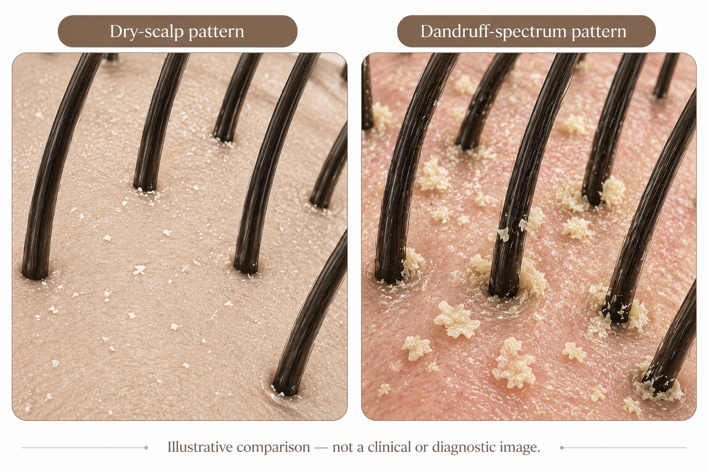
Tap each card to compare
Dry scalp — the deeper picture
Dry scalp flakes because it lacks moisture. The hydrolipid film is depleted or compromised — the scalp isn't retaining what it needs. This is a barrier issue, not a disease process. Causes include aging, seasonal changes, over-cleansing, harsh products, chemical processing. Treatment direction: gentle exfoliation to lift dead cells, then hydration and barrier repair. The goal is to restore what's missing, not suppress a biological process.
Dandruff — the deeper picture
Dandruff is generally associated with the scalp environment shifting out of balance — excess oil, Malassezia yeast activity, inflammation, and faster skin-cell turnover typically combine to produce the flaking and irritation, though the exact balance varies from client to client. This is not a hydration problem — adding moisture to an oily, inflamed scalp can make it worse. Treatment direction: cleansing support, oil control, anti-fungal supporting ingredients, anti-inflammatory botanicals. The goal is to rebalance the environment, not repair a barrier.
When it's not clean-cut
Some clients show features of both — moderate oil with some tightness, or flakes that don't clearly match either column. When that happens, don't force a label. Ask about recent products, wash frequency, and how long the pattern has been present, and favor the gentler service direction until the picture is clearer.
6.4 — The cycle worth understanding
Why the wrong product makes things worse.
This is a common, avoidable pattern: a client sees flakes, assumes dandruff, and reaches for the strongest anti-dandruff product they can find. Here's what actually happens — work through it in order.
Open each stage in order to follow the cycle
1
This is where it starts. A client sees flakes and immediately interprets them as dandruff. The assumption is almost universal — and almost always made without any real assessment.
2
The product choice follows the assumption. Anti-dandruff shampoos are heavily marketed, widely available, and seem like the logical solution. The mistake is reaching for the wrong one.
3
Anti-dandruff shampoos strip oil, suppress yeast, and slow cell turnover. On a scalp that already lacks moisture, they remove what little barrier is left.
4
The scalp responds to barrier loss by becoming drier, tighter, and more reactive. Flaking increases. The client interprets this as the condition getting worse.
5
The logical response to a product not working is to use more of it. This accelerates the damage cycle.
6
By the time they reach you, the scalp has been compromised repeatedly. Your first job is often to stop the damage — not start a new treatment.
Final reasoning
Where do you break the cycle?
A client arrives after repeatedly escalating anti-dandruff products for a dry, increasingly reactive scalp. What should change first?
From Cadence
"This is not treatment failure. It is misidentification. Flaking alone does not justify anti-dandruff treatment. Your job is to identify what type of flaking you are seeing before recommending anything. Sometimes the best thing you can do is simplify — not add more."
What this looks like in real time
Scenario 1
Presentation
Fine white flakes, no visible oil, tight matte scalp.
Likely direction
Dry-scalp pattern.
What this changes
This does not point you toward a stronger dandruff response. Treating an already dry presentation as an oil-driven flaking pattern can intensify dryness and reactivity.
Service direction
Support the barrier, reduce stripping, and simplify the routine.
Scenario 2
Presentation
Yellowish flakes, oil at the root, slight redness.
Likely direction
Dandruff-spectrum pattern.
What this changes
This pattern supports a cleansing-and-regulation direction rather than a hydration-first direction.
Service direction
Support cleansing, regulation, and an appropriate within-scope home-care direction.
Scenario 3
Presentation
Flakes, some oil, mild irritation, not clean-cut.
Likely direction
Mixed or unclear presentation.
What this changes
This is where practitioners can overcorrect. When the pattern is mixed, the priority is not choosing the strongest response — it is avoiding an aggressive one before the picture is clearer.
Service direction
Favor balance first. Avoid aggressive stripping. Ask more questions and choose the gentler direction until the pattern is clearer.
Real scenario
A client comes in with visible flaking and says she's been using a zinc-based anti-dandruff shampoo for three months but it keeps getting worse. Under the microscope you see fine white powdery flakes, minimal oil, and a matte scalp surface. What's happening — and what do you tell her?
6.5 — Malassezia to seborrheic dermatitis: one spectrum
Not two conditions. One spectrum.
Malassezia is a naturally occurring yeast found on most scalps. It becomes a problem when several factors line up together — increased oil, a shift in the scalp's surface environment, and individual variation in how the scalp's immune and inflammatory response reacts to the yeast's activity. As it progresses, it moves along a spectrum from mild dandruff to seborrheic dermatitis — the same underlying process at different levels of severity.
Redness or scaling that spreads beyond the scalp — to the eyebrows, hairline, or ears — combined with active irritation
Broken, weeping, crusted, or bleeding skin
Symptoms the client describes as severe, painful, or rapidly worsening
No improvement despite reasonable home care and product changes
Any presentation you are not confident matches a typical dry-scalp or dandruff-spectrum pattern — including anything that could resemble a different condition (see Section 6.2)
Referral script
"I'm seeing something today that goes beyond what a head spa service is designed to address. I don't want to guess at the cause or risk making it worse, so I'd recommend having it evaluated before we continue with scalp services."
Signature interaction
Sort three presentations.
For each presentation, decide whether to proceed as usual, proceed with a modification, or pause and refer. Weigh the combination of cues together — not any single feature in isolation.
Presentation 1. Fine white powdery flakes, matte surface, minimal oil, mild tightness, no redness.
Presentation 2. Yellowish, clumped flakes, visible oil at the root, mild redness, contained to the scalp, no spread.
Presentation 3. Scale and redness spreading to the eyebrows and hairline, the client reports significant discomfort, and the pattern has persisted for months despite drugstore treatments.
6.7 — Treatment within scope
You are supporting the environment. Not treating the condition.
①
Cleansing support
Regular cleansing reduces excess oil, buildup, and the microbial overgrowth that Malassezia feeds on. Consistency matters more than intensity.
②
Anti-fungal supporting ingredients
Zinc pyrithione, 1%-strength ketoconazole, and 1% selenium sulfide are OTC categories that help manage yeast activity. Never recommend or name a prescription-strength (2%) product.
③
Anti-inflammatory botanicals
Licorice root and chamomile calm the scalp — reducing redness, irritation, and discomfort without disrupting the barrier. Preferred over aggressive treatments in a head spa context.
④
Regular maintenance
Irregular care leads to fluctuation in symptoms. The most effective approach is consistent support over time — not aggressive intervention when things flare.
A product category is not a diagnosis
Recommending a product category is a retail suggestion within a cosmetic service — not a diagnosis and not a prescription. If a presentation meets any of Section 6.6's referral criteria, refer instead of recommending a product.
6.8 — What makes it worse
Match the trigger to what it does.
Understanding what aggravates these conditions helps you educate clients in a way that actually changes their behavior.
Stress & hormonal changes
Stress and hormonal shifts are associated with flare-ups of existing conditions, most likely through a combination of immune and inflammatory response and changes in oil production — not oil production alone. Clients who notice seasonal or cyclical worsening are often seeing a hormonal pattern. Asking about stress levels and lifestyle during intake is useful context, not a diagnosis.
Diet high in sugar, fried, or inflammatory foods
May contribute for some clients, though the evidence here is largely individual rather than firmly established. Worth asking about as part of intake — not something to lecture the client about or present as a guaranteed fix.
Excess oil production
Creates a favorable environment for Malassezia overgrowth. Warmer weather, humidity, and hormonal shifts are commonly associated with a client noticing more oil between washes, though the relationship isn't precise or predictable enough to apply as a fixed rule for any individual client. Ask about recent heat exposure, exercise, and seasonal changes as part of intake rather than assuming a specific cause.
Wrong product use
The most correctable trigger. Overly harsh or stripping products worsen both dryness and dandruff conditions. Clients often arrive already over-treating — multiple shampoos, aggressive products, inconsistent routines. Simplification is often more effective than adding more.
Real-world integration — layering this on Module 5
This module does not replace scalp type analysis. It layers on top of it. You are now asking: is this dry? Is this oil-driven? Is this microbial? Is this mixed? And then: what matters most right now? The practitioner who can answer those questions quickly — and correctly — is the one who makes decisions instead of guesses.
Practitioner insight
"After enough clients, you start to notice: most people are treating the wrong problem. They over-cleanse, over-treat, constantly switch products. Sometimes the best move is not adding more. It's simplifying. Correct interpretation always comes before correct treatment."
Final check
Same client, but this time the microscope shows yellowish clumped flakes near the follicle, visible oiliness, mild redness, and the client reports it spreads to her eyebrows and hairline. How does your response change — and is this still within the scope of a head spa service?
✦
Module complete.
You can now read the difference between dry scalp and dandruff, understand the Malassezia spectrum, and explain it to a client in plain language.
Up next — Module 7
Even the most knowledgeable practitioner cannot deliver a high-level experience in a poorly designed setup. Module 7 covers equipment, tools, room design, and how to build a workspace that makes everything else possible.
Module 7 · Equipment & Room Setup
Before the service starts, your setup is already speaking.
By the time your hands touch the client, they've already formed an impression. Not consciously — but they feel whether you're prepared, whether the space is controlled, whether the service will be smooth or interrupted. Your setup is not separate from the service. It is part of it.
7.1 — The treatment bed
Your most important equipment decision.
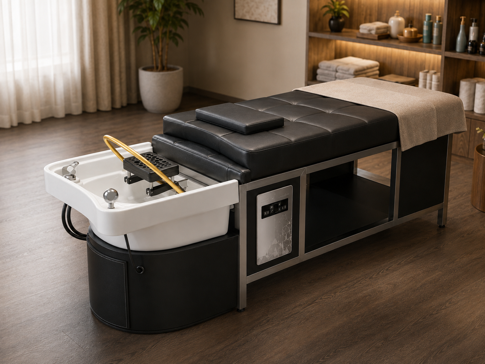
A configured head spa bed, ready for service.
The head spa bed is the foundation of everything. Comfort, positioning, water flow, massage access, client perception — it all builds from this. You can perform a service without the right bed. But you cannot create a premium experience without one.
A halo-equipped wet bed is the foundation of a true head spa service. The halo allows water immersion during massage, which changes the client's physical and psychological state in a way that dry work cannot replicate. Evaluate any bed you're considering against what it actually needs to accomplish — not against how it looks in a photo.
What most people get wrong
They choose based on how it looks, not how it performs. A bed with restrictive armrests may photograph beautifully — but larger clients feel confined, taller clients feel compressed, and movement becomes limited. Once comfort breaks, the entire service is affected. Nothing will compensate for it.
Evaluate the bed against what it needs to do — not how it looks. Run any bed you're offered or can afford against these categories:
1. Basin & head support
The headrest curve should actually support the occipital bone in a relaxed, non-extended position — this connects directly to correct client positioning in Section 7.4.
2. Client entry, exit & stability
A client should be able to get on and off the bed safely, and the bed shouldn't shift or wobble under normal movement.
3. Practitioner reach & working height
The bed's height and access affect your own posture and reach across an entire shift — not just a single service.
4. Water management
How water is contained and drained affects both service flow and how easily the station can be sanitized between clients.
5. Cleaning & sanitation compatibility
Surfaces and seams need to be things you can actually disinfect between clients — not just wipe at a glance.
6. Space requirements — preference, not a universal standard
How much room a bed needs depends on your specific space and business. This is a practitioner-preference and business-context decision, not a documented requirement.
7. Armrest configuration — preference, not a requirement
Armrests that tuck in larger or taller clients are a commonly reported comfort complaint among experienced practitioners — a preference many share, not a documented safety or ergonomic requirement. The deciding factor is always how a given bed performs for your actual clientele.
There is no single required bed model — evaluating any bed against these categories, instead of how it photographs, is what makes the decision transferable to whatever you're actually offered or can afford.
From Cadence
"A common early mistake is prioritizing what looks impressive in photos over what actually feels comfortable to lie in for an hour. Choose the bed your clients will want to come back to — not the one that photographs well."
7.2 — Tools & supplies
Essentials first. Upgrades later.
Most people overvalue tools. They assume more tools means a better service. That's incorrect. Your hands create the experience. Tools support, enhance, and assist — but they should never replace presence. Overuse of tools leads to a mechanical-feeling service, loss of connection, and inconsistent pressure. Clients may not say it. But they feel it.
Start with everything on the essentials list. Nothing on the upgrades list is necessary to deliver a premium service — add from the upgrade tier when your volume justifies it.
↓ Activate each category to expand
EssentialFresh bed sheets — minimum 2 sets per station
EssentialTowels — hand and large, minimum 6 each
EssentialTowel warmer
EssentialSpa wraps and robes
EssentialKnee bolster
EssentialEye mask
UpgradeWeighted blanket
UpgradeHeated jade eye mask
EssentialRolling cart — stations should be mobile
EssentialMixing bowls — 3–4 small dishes for product portions
EssentialApplicator brushes
EssentialWide-tooth comb and detangling brush
EssentialSectioning clips
EssentialBlow dryer
UpgradeScalp microscope / dermatoscope
UpgradeDry brushing tool
UpgradeSteamer hood attachment
EssentialBarbicide concentrate and properly sized container
EssentialDisinfecting wipes — EPA-registered
EssentialNitrile gloves
EssentialSeparate bins — clean tools vs dirty tools, never mix
EssentialHalo line cleaner — manufacturer-specific
EssentialBluetooth speaker — water-resistant
EssentialCurated playlist — non-lyric, consistent tone
EssentialEssential oil diffuser
UpgradeDimmable overhead lighting
UpgradeLED bias lighting or backlit panels
UpgradeAmbient sound machine
Arranging your cart
Where something lives on your cart matters as much as whether you own it. Arrange by how often you reach for it during a service — not by the four categories above. Those categories are for deciding what to buy; this is for how fast you can work once the client is in the room.
Within-reach zone
Shoulder-to-waist height, no step required: the three product dishes, the applicator brush, and anything you touch during nearly every step of the service. This is what makes the pressure test below — "can I reach everything without stepping away?" — actually achievable.
One-step zone
Items used once or twice per service: comb or detangling brush, sectioning clips, blow dryer, spa wrap or robe.
Reserve zone — off the working surface
Backup linens, upgrade-tier tools not in use for this service, sanitation concentrate stock. Keeping these off the working surface reduces clutter and keeps your clean/dirty separation clean and visible.
This is also where the clean/dirty bin separation from the sanitation supplies above earns its place — it only does its job if it's maintained during the live service, not just set up before the client arrives.
7.3 — Station prep sequence
Run this before every single client.
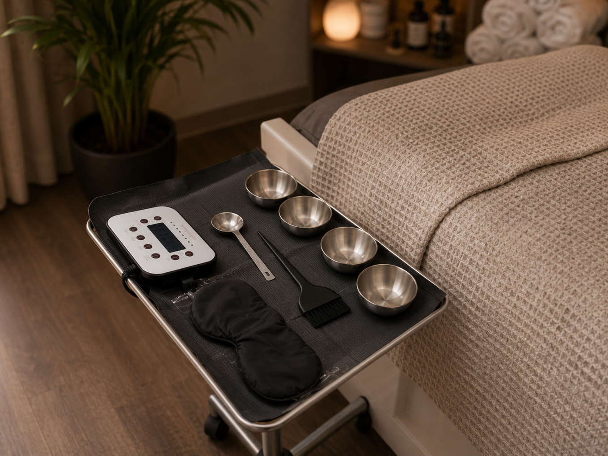
A station set up in reach order — the items used most, closest.
Inconsistency in setup is invisible to you and obvious to your client. A client who experienced a perfectly set room last visit notices when the towel warmer is cold or the cart is in the wrong place — even if they can't articulate why the experience felt off. Build a prep sequence and run it the same way every time.
The order below isn't arbitrary — it follows a build sequence: sanitation and structural setup first, then product and tool staging, then comfort, then ambiance, so nothing has to be assembled while the room is being sanitized or the client is already in it.
↓ Activate each step to mark complete
✓
Station ready.
Run this before every single client.
7.4 — Client positioning
Three things to confirm before the water runs.
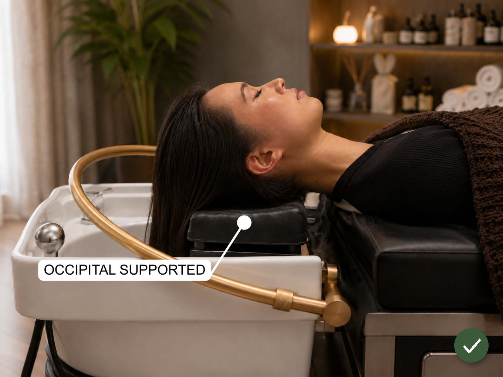
Correct: occipital supported, neck relaxed, shoulders clear of the edge.
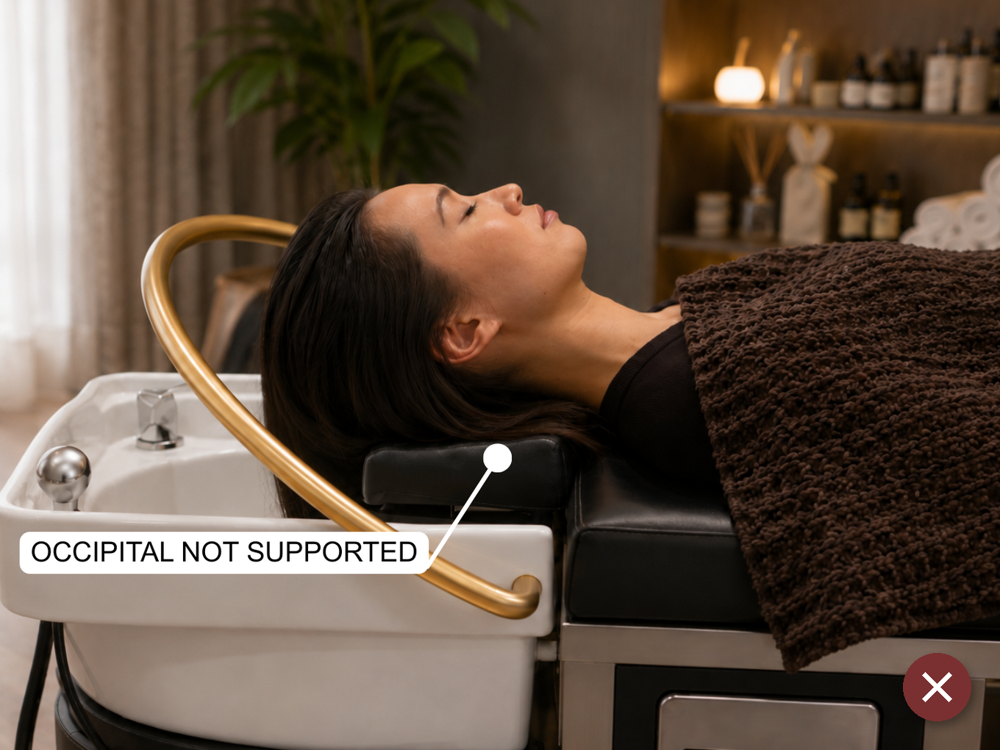
Incorrect: chin lifted, neck extended over the basin edge — the exact position to avoid.
Positioning errors are hard to correct mid-service without breaking the experience. Get these right before you start — it takes thirty seconds and prevents a disruption you cannot undo.
01
Halo alignment
Client centered under the halo so water hits evenly across the scalp. Adjust the client's position — not the halo.
02
Shoulder position
Top of shoulders sit 1–2 inches off the edge of the bed. This gives you clean access to the neck without the client sliding.
03
Occipital support
The occipital bone rests in the deepest curve of the headrest with the neck naturally relaxed — not extended, not flexed. If the chin is lifting, reposition.
Why this matters
A relaxed, neutral neck position isn't just about comfort — sustained hyperextension against a hard basin edge is a documented, if rare, safety concern. Keeping the neck supported and unextended, as the three checks above describe, is the setup detail most directly within a practitioner's control to reduce that risk — not a guarantee against it.
!
Watch for: the client reports neck strain, dizziness, or discomfort at any point, or the chin is visibly lifting. Some discomfort signals are only about comfort; if a client ever reports dizziness, visual changes, or slurred speech, stop immediately and treat it as a medical concern, not a positioning fix.
What to do: stop the service, adjust the positioning or temperature issue, communicate what you're doing and check in with the client, then resume only once she confirms she's comfortable. Never adjust silently or push through to a "natural" stopping point.
From Cadence
"Cover the client first, then slide the knee bolster into place. Weighted blanket across the chest if using. Eye mask on. Then begin. Doing it out of sequence makes the client feel arranged rather than cared for."
→
Pressure test your setup: Ask yourself — if something unexpected happens, can I adjust without breaking flow? Can I reach everything without stepping away? Does this still work when I'm not thinking perfectly? If not, your setup is not ready.
Signature interaction
Find the setup mistakes.
Not every difference is a mistake. Look at each setup and decide whether something actually needs to change — or whether it is simply a different, functional way of working.
Setup 1 of 4
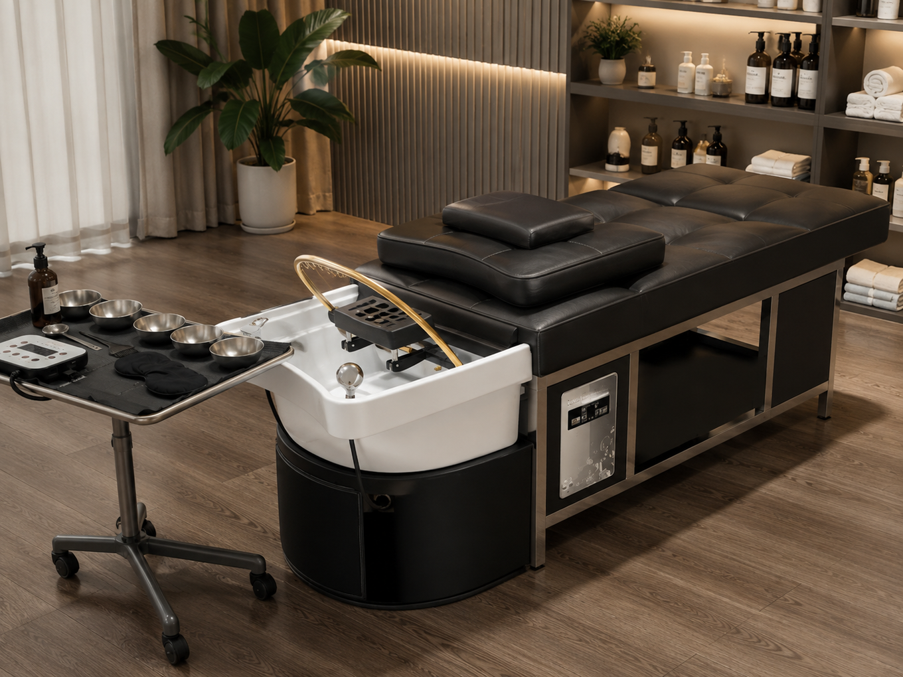
The cart is positioned on the practitioner's left. Does anything here actually need to change?
✓ Acceptable variation
Different does not automatically mean wrong. The cart can sit on either side as long as active-use items remain comfortably reachable and the setup supports efficient service flow.
Reachability matters. Left versus right does not.
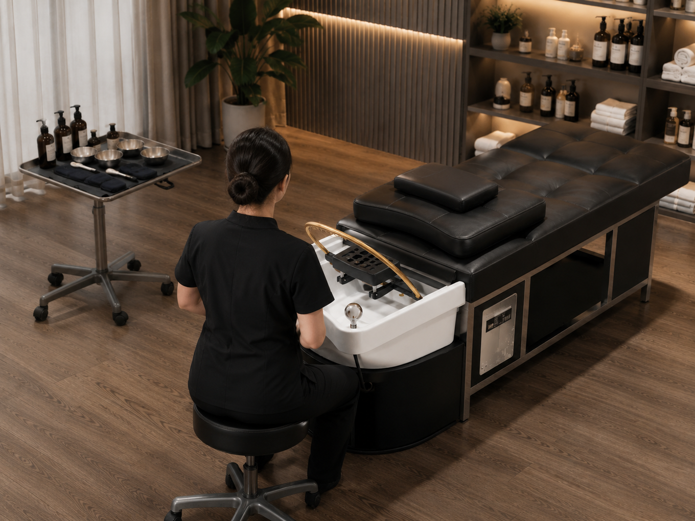
The items used throughout the service are positioned well outside the immediate working area. Does this setup need correction?
! Needs correction
Yes. Frequently used items belong within comfortable working reach. Repeatedly stepping away for active-use products interrupts service flow and signals that the station needs reorganizing.
Frequency of use should influence placement.
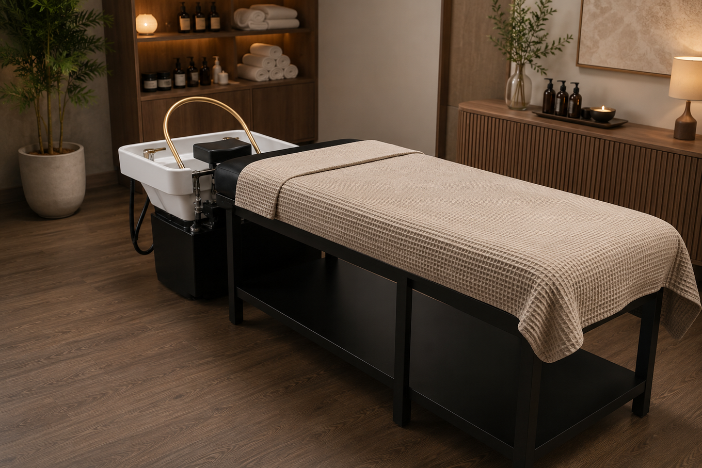
This treatment bed does not have optional armrests. Is that itself a setup problem?
✓ Acceptable variation
Not necessarily. Equipment should be judged by function, support, and service usability — not by whether it includes every optional feature. Armrests may be a practitioner preference rather than a universal requirement.
Equipment preference is not the same as a functional requirement.
Look at the client's head, neck, and shoulder position. Does this setup need correction?
! Needs correction
Yes. The client is positioned too far from the head end, leaving the occipital area poorly supported and the neck extended. Reposition the client before continuing.
What to remember
Professional setup is judged by function — support, reach, comfort, and service flow — not by whether every treatment room looks identical.
Planning check
A new student is setting up their first head spa room from scratch. What would you tell them to do first — and why does the order of prep matter?
Final check
You've just begun the halo rinse phase. Your client mentions her neck feels strained and she's a little cold. The service has just started. Walk through how you respond — what you adjust and in what order.
✓
Module complete.
You can evaluate a setup, prepare a station, and position a client correctly — and now know what to do if something's off. Next: the service itself.
Up next — Module 8
The full 17-step service map. Both formats. Every transition and every micro-teach moment that makes this service worth the price clients pay for it.
Module 8 · The Head Spa Service
Master the flow, not the script.
This module is about understanding how the service moves — from one technique to the next, why each part belongs, and how to adapt in real time without losing the experience.
Think in phases, not steps
Steps make you robotic. Phases keep you in control.
If you think in steps, you become rigid — focused on what's next rather than what's happening now. If you think in phases, you stay aware of the full arc of the service. You know where you are, what the client is feeling, and what's coming — without losing presence.
Seven phases, at a glance
①
Entry & Regulation
Aromatherapy + dry work
Settle the client. Establish rhythm. Begin connection. If you feel rushed here, the rest of the service will feel rushed too.
②
Immersion
Water + initial stimulation
Introduce water. Deepen relaxation. Temperature inconsistency or hesitation here breaks trust immediately.
③
Treatment Work
Exfoliation + scalp massage
One of the more demanding phases to execute well. Continuous movement, even pressure, no stopping and starting. Pausing turns treatment into a sequence instead of an experience.
④
Expansion
Neck, shoulders, extended work
Widen the experience. Release tension. Deepen relaxation. Grounded, connected, not rushed.
⑤
Reset & Cleanse
Rinse + shampoo + treatment
Bring the scalp back to balance. Smooth transitions, consistent temperature. No break in rhythm.
⑥
Signature Moments
Waterfall + cooling + hot towel
Create memorable peaks. Controlled, intentional, slightly elevated from the rest.
⑦
Exit
Wrap + sit-up + transition out
This is where most practitioners fail. Rushing this moment makes the entire service feel shorter and less valuable. Gradual, calm, complete.
8.1 — Core and Extended
Two AIMT reference protocols, one foundation.
Core and Extended are AIMT reference protocols that show how a complete service contracts or expands within a deliberately designed structure — not just two numbers on a menu. The difference is service structure, not simply "less time" versus "more time": Core keeps the essential flow intact with its scalable massage, bodywork, and sensory portions tighter; Extended directs its added time intentionally toward selected massage, bodywork, and treatment portions, not spread evenly across every step. The masterclass ahead demonstrates the Extended 90-minute reference.
↓ Select the format you're studying today — it emphasizes that format's pacing landmarks below
Designed around the service, not the clock
Core (60) and Extended (90) are AIMT's current reference formats. Each is intentionally built as its own service structure — not as a formula for simply speeding up or stretching every step. A shorter service may require a more streamlined protocol, with deliberate decisions about which components belong. A longer service should expand only where additional time genuinely improves the experience — such as massage, bodywork, processing, or selected sensory work. The goal is to decide where the time adds value, not force the protocol to fit a number. For this module, pacing stays anchored to the Core and Extended reference formats.
8.2 — The service map
The masterclass, one chapter at a time.
Use each chapter to study more than the technique itself. Pay attention to why the step appears where it does, what to watch for, where judgment matters, and how to adapt the service without breaking the flow.
Explain intentionally, not continuously.
This service is relaxation-first — most of it stays quiet, not narrated step by step. The scripts below each chapter aren't lines to recite during service; they're prepared answers. Learn them so that if a client asks a question, you can answer in a sentence or two, confidently, and return attention to the treatment — not think on the spot or ramble. Each chapter is labeled "Communication cue" (say this proactively), "Keep the flow quiet" (no narration needed by default), or "If they ask" (your ready answer).
The service protocol itself is explained to the client at intake — that's where adaptations, omissions, and preferences are identified. During treatment, the client shouldn't have to repeatedly decide whether each standard step happens; communication manages comfort, pressure, temperature, positioning, and real transitions instead.
Reading the pacing markers
Each chapter carries small timing pills like Core: ~45 min left — approximate pacing landmarks, not rules, showing roughly how much of the selected Core (60-minute) or Extended (90-minute) reference protocol remains at that point in the service. Steps 01–02 are the pre-timer opening — the treatment clock itself starts at Step 03. These aren't rigid deadlines, absolute timing rules, or pass/fail stop times — client needs, product instructions, technique requirements, and your own judgment can all shift the actual pace. The masterclass teaches the technique. These markers teach the rhythm. The Service Timer, ahead in this module, turns that rhythm into a live protocol companion you can run during service.
01
Aromatherapy selection
Chapter complete
How to do it
Why we do it
How to communicate it
Course Review Mode — chapters unlocked for inspection only; nothing here is saved.
Printable Head Spa Service Maps
Keep the Core and Extended service flow within reach while you practice.
Flow is what turns technique into experience. A strong service has no long pauses, no searching, no abrupt transitions. Ask yourself during service: am I stopping anywhere? Am I reaching for something? Am I thinking too hard about what's next? If yes — flow is breaking. Fix it by thinking one step ahead, positioning tools correctly before you need them.
Pressure consistency
Clients don't analyze pressure. They feel inconsistency. Consistent pressure reads as intentional. Uneven or unpredictable pressure reads as uncertain — even when the underlying technique is sound. Consistency, not any single pressure level, is what a client actually feels as skill — an often-underestimated part of the service.
Temperature control
You do not guess temperature. You confirm it. Every time. Water that is too hot, too cold, or inconsistent is not a small mistake — it is a trust break. Equipment fails. Your hand is the safeguard. Always test before contact.
Transitions
Transitions are where services succeed or fail. A good transition feels like one movement leads into the next — no pause, no reset. A bad transition feels like stop, reposition, start again. That breaks immersion immediately. Fix it by thinking ahead and staying one step mentally ahead of your hands.
→
Pressure test your service: After practicing, ask — where did I hesitate? Where did flow break? Did anything feel disconnected? Did I reach for anything mid-service? Fix those points specifically. That is how you improve.
Signature interaction
Protect the Flow
The plan changes mid-service more often than a beginner expects. Below are three moments where it does — decide how you'd preserve the service's flow and experience. This is ungraded; nothing here is saved or scored.
Scenario 1. A client who opted into fragrance at the start of the service now asks, midway through, to skip it going forward.
Scenario 2. You're moving into Step 4. The scalp presentation in front of you tells you a strong exfoliation approach would be too aggressive today.
Scenario 3. The conditioning treatment needs more processing time than the format allows for today's appointment.
→
The protocol gives structure. Judgment keeps it appropriate.
Adaptation check
You are moving into the exfoliation portion of the service and determine that a strong exfoliation approach is not appropriate for this client today. Walk through how you would modify the treatment while preserving the service flow. Include what you would change about product, pressure, technique, or intensity, and what you would communicate to the client.
Client question
You are in the scalp-massage portion of the service when your client asks, "What makes this different from a regular shampoo at the salon?" What would you say in the moment without breaking the experience?
Take the Service Into Practice
Your service protocol, available anywhere.
Once you know this service, you shouldn't have to reopen this lesson to run it. The AIMT Service Timer is that protocol, made practical — a treatment-room companion for training the full service, rehearsing pacing, refreshing before a client, and keeping the sequence available without reopening the course.
Included with your certification
AIMT Service Timer
This is the actual AIMT Service Timer, embedded and limited to Steps 01–04 of the Extended (90-minute) reference. It starts on its own as you reach it below — let it run and see what a real treatment-room rehearsal feels like.
A contained preview of the real Timer — Steps 01–04, Extended reference, real timing. It begins automatically as you reach it.
AIMT · Service Timer
0:00
0:00
this step · total
Step 01
Note
Up next →
Timer paused
Paused
Real countdown · pause or skip anytime
✦
Preview Complete
That's the pre-timer opening and the treatment clock's first two steps. The full Service Timer carries the complete Core and Extended sequences, from open to close.
Service remaining — where you are across the whole treatment, not just this step.
Ring & clock — time left on the technique you're performing right now.
Phase — the broader section of the protocol you're in.
Up next — what's coming, so you can start the transition before the clock runs out.
✓
Module complete.
You can run the full service, adapt it when conditions change, and communicate with intention — not just recite the steps. Next: what happens between services.
Up next — Module 9
Checkout, client closing, and pricing strategy. How to close the appointment, communicate value, and price the services you now know how to perform.
Module 10 · Sanitation & Reset Systems
Build a Sanitation System That Holds Up All Day
Most people treat sanitation and reset as something separate from the service. It's not. Clients may not watch you clean — but they feel freshness, organization, and readiness. And they also feel leftover clutter, damp linens, and signs of the previous client. That's what breaks a premium experience.
Building on Your Licensure
You already know sanitation fundamentals. This module teaches you how to apply them to the specific realities of a Head Spa.
This module builds on the sanitation and disinfection education you already completed for your license. AIMT's focus is how those fundamentals apply to wet systems, halo equipment, reusable tools, service surfaces, linens, product handling, room reset, and workflow when the schedule is tight.
✦
Governing sources
Your current state or local requirements, your disinfectant and product labels, and your equipment manufacturer's instructions remain controlling wherever they're more specific than this module. AIMT teaches how those requirements apply inside a Head Spa — this course doesn't replace them.
10.1 — Use the Right Process for the Job
Five words. Five different actions.
"Clean," "disinfect," "sanitize," and "sterile" get used interchangeably in casual conversation — but they aren't the same action, and using the wrong one in the wrong place is where real risk lives.
①
Cleaning
Removal, not treatment
Removes soil, residue, and debris. Often required before an item can be properly disinfected.
②
Disinfection
Follows the label, every time
Treats an appropriate item or surface with a disinfectant according to its label — approved use, dilution where applicable, required contact time, and applicable rules. One product does not work for everything.
③
Launder / Replace / Discard
Not one path
Washable porous goods, disposable single-use items, and reusable hard nonporous tools each follow a different process — they were never interchangeable.
④
Reset
Preparing for what's next
Preparing the cleaned, processed room, supplies, and equipment for the next service. Reset is not a substitute for disinfection.
⑤
Sterilization
A different standard
A higher standard than disinfection, used only where it's specifically required. Disinfected is not the same as sterile, and not every Head Spa setup requires sterilization equipment.
10.2 — Process the Right Item the Right Way
Match the process to what the item actually is.
Instead of one universal schedule, think item → process. Some processing happens between clients, some follows a daily opening/closing routine, and some is periodic and manufacturer-directed. Actual frequency depends on your product label, equipment manufacturer instructions, applicable rules, service use, and your own business's SOP — not a single number this course can certify for every setup.
Between clients
Reusable hard, nonporous tools
Remove soil and debris. Disinfect before reuse with an appropriate labeled product. Preserve the required contact time. Keep clean and used tools separated — never together.
Between clients
Hard, nonporous service surfaces
Clean as needed. Disinfect with an appropriate labeled product. Respect the required wet/contact time before the surface is back in use.
Between clients
Linens / washable porous goods
Remove immediately after use and contain away from clean stock. Launder before reuse. Store clean linens protected from contamination.
Between clients
Single-use items
Discard after their intended single use. Never reprocess a single-use item as if it were reusable.
Periodic / manufacturer-directed
Halo / basin / water system / equipment
Follow your specific equipment manufacturer's cleaning, disinfection, and maintenance instructions, plus any applicable regulatory requirements. Your bed or halo system's own manual is the actual authority here — not a generic routine.
Between clients
Product bowls / applicators / supplies
Clean applicators between clients. Portion and dispense hygienically. Never reuse a client's leftover product on the next client.
✦
Instructor tip
In our own Head Spa, a whirlpool/jet-system cleaner has worked especially well for periodic cleaning of the halo/water lines. If you choose to use one, confirm first that it's compatible with your specific bed or halo system, and follow both the cleaner's label and your equipment manufacturer's instructions. This is a maintenance tip, not a required procedure — it doesn't replace any disinfection step your system actually requires.
10.3 — Build a Reset Around What Cannot Be Rushed
Contain. Clean. Disinfect. Reset. Verify.
A reliable reset isn't a race — it's a repeatable flow with one phase that sets the actual pace: whatever process time the item or equipment genuinely requires.
01
Contain
Move used linens, disposable items, and dirty implements into their correct used/dirty handling path immediately — before anything else.
02
Clean
Remove soil, product residue, and debris wherever the next required process depends on it.
03
Disinfect / Process
Start whatever disinfectant contact time, equipment cycle, or manufacturer-directed process is actually required. This step doesn't get shortened.
04
Reset
Rebuild clean linens, protected supplies, necessary products, sensory setup, and equipment — without recontaminating anything you just processed.
05
Verify
Walk the room before the next client. Confirm equipment is ready, required process time is complete, clean and used items stay separated, supplies are stocked, and nothing from the last client remains.
✦
Practitioner note
Once your process is correct, practice it until it's repeatable. Then measure your actual reset time and build enough turnover into your schedule to run it without rushing anything required. Independent tasks can happen while a required contact time or equipment cycle runs — the required process itself never gets shortened because the next client is waiting.
Reset Under Pressure
The room isn't fully ready. The next client already is.
The next client has arrived early. Most of the room is reset, but a reusable item or surface is still completing its required disinfectant contact time. What do you do?
10.4 — Build the System Before You're Under Pressure
Reduce decisions. Not standards.
Reliability doesn't come from moving faster under pressure. It comes from a system that already removed the decisions pressure would otherwise force you to make badly.
What this looks like under pressure
You are running behind. One client just left. The next client arrives early.
Weak system
Rushed cleaning, missing items, scattered tools. Next service starts unstable.
Strong system
Automatic reset, no thinking required, everything already in place. Next service starts controlled.
The difference is not discipline in the moment — it's the system you built before the moment.
Consistency comes from
Clear clean/used zones · Known product label and contact-time instructions · Equipment instructions accessible · Appropriate clean backups on hand · Protected clean linens and supplies · A room-specific reset order · Adequate turnover time built into the schedule
✦
Pressure test your system
Can I reset without thinking? Does it hold up when I'm behind? Is everything I need already within reach? If not, the system isn't finished — the pressure just revealed it.
Records can support consistency, maintenance history, traceability, and review when a concern occurs. Keep any records your jurisdiction requires, plus any additional logs your own business uses to verify its procedures.
Possible log fields
Date/time · Product used · Dilution where applicable · Contact time · Equipment maintenance performed · Person performing the procedure · Issues or deviations
Use your current state or local requirements, and set up a recurring compliance review — not a once-a-year checkbox. Recheck whenever your regulations, equipment, disinfectants, services, or procedures change. An annual internal review is a reasonable business habit, not a guarantee of compliance on its own.
10.5 — When Routine Reset Is Not Enough
Blood or body fluid is not a routine reset.
Blood or another potentially infectious material changes what happens next. It isn't handled with your normal between-client reset.
⚠
Caution
Stop your normal reset flow. Follow your business's applicable exposure/cleanup procedure. Use appropriate PPE. Contain and remove visible material safely. Clean and process affected reusable items and surfaces appropriately, using products according to their labels. Handle contaminated laundry and disposables appropriately. Document and follow your workplace's and regulatory process. Employee/employer exposure requirements can depend on your applicable workplace law and business structure — know what applies to yours.
A client reporting a rash the next day doesn't prove sanitation caused it, a product caused it, an allergy caused it, friction caused it, that the business is at fault, or that it isn't. Your job is to respond professionally — not to diagnose or assume a cause.
How to respond
Acknowledge the concern. Document exactly what the client reports. Don't diagnose. Don't assume or deny a cause. Review the service, intake, and product records. Review sanitation, equipment, linen, and process records where relevant. Identify any actual deviation. Follow your business's incident or compliance procedure. Suggest medical evaluation when it's warranted, without attempting to diagnose.
Between-Client Sanitation & Reset Checklist
A room-side reference for the Contain → Clean → Disinfect/Process → Reset → Verify workflow, plus a fillable page for recording your own verified product, equipment, and jurisdiction details.
Walk me through your between-client reset in the order that works for your setup. Identify what you remove or contain, what you clean and disinfect, what you replace or restock, and any required contact or equipment time you would not shorten.
Post-service concern response
A client contacts you the next day and reports a rash on her neck after the service. What would you say to her, what facts would you document, and what would you review internally without diagnosing or assuming the cause?
✓
Module complete.
You can deliver a great service. You can reset it cleanly. That discipline is what makes the experience repeatable — for every client, every time.
Up next — Module 11
AI / Modern Practice Tools. Modern practitioners are already encountering AI — this module teaches you to use it well, without losing the judgment that makes you a professional.
Close the experience as intentionally as you opened it.
The treatment is done. What happens next — how you close the appointment, and how you price what you do — is its own skill. This module is a Business Decision Lab: less about performing, more about deciding, from real numbers and calm communication.
9.1 — From treatment close to checkout
The moment isn't over when the treatment is.
Module 8 ends with one line: "Today I focused a little more on [area or service priority you addressed]. How are you feeling?" That's a treatment-closing observation, not a business conversation. What happens after it — checkout, questions, whether to book again — is this module's subject.
A shape, not a script
Reorient → briefly recap → answer or recommend where relevant → invite future options without pressure → complete checkout. This is not a rigid or exact universal order — treat it as a shape you move through naturally, not a script to recite.
Give the client a moment to reorient before you speak further. A quiet, relaxation-first service shouldn't end with an abrupt shift into a rapid sales pitch — speak at a normal, calm pace.
Recap only what you genuinely did during the service. Don't diagnose. Don't exaggerate results — a short, honest sentence is more credible than an impressive one.
Answer questions clearly, but don't unload every possible recommendation at once. A recommendation should have a specific reason tied to the service you just delivered — not exist because it's on the menu. And the flow has to work cleanly for a client who says no to everything — retail, enhancements, rebooking. Declining should never create awkwardness.
✦
Remember
Rebooking is an available next step, not proof you successfully "closed." If a client wants to plan another visit, help them choose the service or timing that fits their goals, preferences, and schedule — don't teach yourself a universal treatment frequency just to manufacture a future booking.
Checkout, platform-neutral
Confirm what the client is paying for. Communicate the total clearly. Process payment through your business's own normal system. Provide a receipt or confirmation as appropriate. If your business accepts gratuity, keep the presentation neutral. This course doesn't teach a specific point-of-sale platform, and gratuity is never mandatory or a fixed percentage — both are business decisions.
Close Without Pressure
Choose the response that keeps the experience intact.
A client has just finished an Extended-format Head Spa service. She's sitting up, taking a slow breath, reorienting to the room. Which response best moves toward checkout without breaking the experience you just built?
9.2 — Know the real cost
Four inputs. Not a rigid formula — a way of thinking.
Real cost isn't a guess, and it isn't one universal number either. It's components you account for deliberately.
①
Direct & variable costs
Products, consumables, laundry, disposables
These scale with each service. Track your actual use per service — not a rough guess.
These exist whether you see a client or not. There's no single universally correct way to allocate them across your services — how you divide them is a business decision, not a course requirement.
A "60-minute service" can require meaningfully more than 60 minutes of your capacity. Account for your own full time — not someone else's ratio.
④
Desired profitability
How much margin you want
How much margin you want is not a course-prescribed number. It's a deliberate business decision you make and can explain — not a default you accept without thinking about it.
9.3 — Margin vs. markup
Two words. Two different prices.
Markup is calculated from cost: a 30% markup on a $100 cost is $130. Margin is calculated from selling price: a 30% margin means 30% of the selling price is profit, which requires solving price = cost ÷ (1 − margin) — at a 30% margin, a $100 cost produces a price of about $143, not $130.
Same $100 cost. Two different results.
30% markup on a $100 cost: $100 × 1.30 = $130.
30% margin on a $100 cost: $100 ÷ (1 − 0.30) ≈ $143.
✦
Key point
"30% markup" and "30% margin" do not produce the same selling price. Know which one you're using — this course's calculator, next, uses margin.
9.4 — Price your service
Cost base → target price.
Enter your own numbers — real or illustrative — for a service you offer or plan to offer. The calculator uses margin, the concept from 9.3: it solves for the selling price required to hit the target margin you choose, starting from your modeled cost base.
Cost base → target price calculator
✦
Business note
This calculator is a planning tool. A business may also need to account for items such as taxes, payroll burden, payment-processing costs, insurance, locally required charges, and other operating expenses, depending on business structure and jurisdiction. AIMT does not prescribe state-specific tax treatment or business/legal structure.
9.5 — Market context, not copycat pricing
Look at the market after you know your own numbers — not instead of them.
A competitor's price may not cover their own actual costs — copying it risks copying a model that's already losing money. Know your own economics first, then look at your local market. Market context can legitimately inform client expectations, positioning, local price ranges, service comparison, demand, and business model — it isn't irrelevant, just secondary.
✦
Why this matters
Final price sits at the intersection of cost structure, service design, capacity, market context, and business positioning — not any one of these alone.
9.6 — Design your menu
Make the menu easy to understand.
A concise menu is generally easier for a client to navigate. Two or three clearly differentiated Head Spa options may be a useful structure for some businesses — but the number of services should follow your actual business and protocol design, not a universal rule.
✦
Service design note
Require meaningful differentiation. Different menu options should change something real — treatment time, massage or bodywork, processing, included enhancements, service scope, sensory work, or another deliberate component. Don't engineer an artificial "premium" difference just to create an anchor, and don't try to make the higher-priced option feel like the obvious choice.
✦
Remember
Core and Extended are AIMT's teaching labels — not required menu names. Core and Extended, from Module 8's masterclass, are AIMT's own reference-format teaching labels. They are not required client-facing menu names. Your business can name and package its own services differently.
9.7 — Enhancements that earn their place
An enhancement should add something real.
A genuine enhancement has a distinct purpose, a real service difference, a time effect where applicable, a cost effect, clear client-facing positioning, and an appropriate place in the client journey. Base a recommendation on the established service plan, the client's goals and preferences, your observation within scope, product directions, contraindications or modifications already identified, your training, and the appointment time you actually have.
✦
Practitioner note
Don't imply "what the scalp needs" — that phrasing crosses into diagnosis. Don't recommend an enhancement merely because it's on the menu. Don't claim an enhancement "converts" because of how it's presented.
Scalp treatment serum
"Based on what I'm observing today, I'd suggest adding a treatment serum — it takes about 5 minutes and supports what we're already doing."
Extended massage time
"If you'd like, I can extend your massage by 15 minutes — I noticed some tension through your shoulders today."
Deep conditioning upgrade
"Your ends could use extra moisture — I can swap in a protein mask and add steam. It makes a real difference on lengths like yours."
Blow dry
Decide in advance whether a blow dry is included or an add-on for your business. Both are valid — just be consistent and clear at booking.
Aromatherapy enhancement
"We can add a custom aromatherapy blend today, based on your preference."
An enhancement recommendation must never override a genuine scalp-presentation safety reason not to add a product — from Module 5 and 6's adaptation and contraindication judgment. If a presentation calls for restraint, restraint wins over the recommendation.
Head Spa Enhancement Strategy Guide
Explore additional enhancement ideas, why they may earn a place on your menu, and how to position them clearly without turning the client experience into a sales pitch.
Build or evaluate a Head Spa service menu for your business. For each service, name what it includes and its price. Then explain the real costs and practitioner time behind the pricing and why the differences between the options are clear to a client.
9.8 — When a client says the price felt high
One comment. Several possible causes.
"That felt expensive" can mean several different things: a price/market mismatch, unclear expectations, unclear inclusions, poor menu differentiation, weak positioning, a service-delivery mismatch, genuine affordability, one client's individual preference, a repeated pattern worth addressing — or, sometimes, that nothing needs to change at all. Don't diagnose the business problem from one sentence.
In the moment
Acknowledge. Stay calm. Don't argue. Don't reach for an immediate discount. Don't lecture the client on value. Answer a genuine question clearly. Preserve the client's autonomy.
A model response — not a required script
"Thank you for telling me. I'm glad you enjoyed the service. Our pricing reflects the time and components included, and I'm happy to explain what was included or help you compare options for a future visit."
Afterward, review the evidence
Was the price clear before booking? Were the inclusions clear? Does the price cover your real cost structure? Does the menu communicate meaningful differences? Is this feedback recurring? Does the service experience support the positioning you intend? Is the price appropriate for the market you're actually serving?
✦
Remember
Don't assume the client is wrong. Don't assume the price is wrong.
9.9 — Why pricing really goes wrong
Confidence is not a financial model.
Underpricing has more causes than fear: incomplete cost data, poor overhead allocation, inaccurate time assumptions, competitor copying, an intentional launch strategy, market constraints, weak service differentiation, a lack of pricing knowledge — or, yes, sometimes fear or a lack of confidence. Fear is one cause among several, not the default explanation.
✦
Why this matters
Persistent underpricing can contribute to financial strain, unsustainable workload, overbooking, or inconsistent delivery over time — not a guaranteed outcome, but a real pattern worth watching for.
Positioning language matters
"This is our basic option" → "This is our core service."
"This is more expensive" → "This is our extended experience." These describe accurate framing — not engineered pressure.
Price feedback and client closing
At checkout, a client says, "I loved the service, but the price felt high." What would you say in the moment, and what would you review afterward before deciding whether anything about your pricing, menu, or positioning should change?
✦
Module complete.
You can close a service the way you opened it, and price it from real numbers instead of pressure or guesswork.
Up next — Module 10
Sanitation and reset systems — the work between every service that separates consistent professionals from inconsistent ones.
Module 11 · AI / Modern Practice Tools
Human-led. AI-assisted.
AI is already becoming part of modern practice — from business and communication to research, imaging, and the questions clients bring into the room. The goal is not to hand over your judgment. It is to learn how to use these tools well.
You've already experienced AIMT's philosophy in action through Cadence. This course was built by human practitioners and professionals; Cadence is an AI learning-support tool built around that curriculum. AI can make education and practice more useful and responsive, but it does not replace the human expertise behind it. Hands-on training, webinars, and clinical/practical education remain human-led.
✦
AIMT position
If you're going to use AI, learn to use it well.
11.1 — Tool literacy
What AI Is Actually Good At
The specific tools will change. The more durable skill is understanding what kind of job you're giving them — and what kind of output they can realistically produce.
Language / reasoning assistants
Drafting, brainstorming, summarizing, organizing, comparison, research, explanation, decision support
Imaging, comparison, density measurement, pattern recognition, tracking, scoring, routine suggestions
Automation / practice systems
Scheduling, CRM, email, workflows, analytics, documentation, customer service
Professional-looking output is not automatically verified output. Creative AI leaves accuracy, claims, brand fit, and final approval with the practitioner — never the tool.
11.2 — Better input
Give AI a Better B.R.I.E.F.
Better input produces more useful output. Prompting isn't magic wording — it's giving the tool a clear job.
B
Background
What does the tool need to know?
R
Request
What do you actually want it to do?
I
Instructions
What tone, audience, boundaries, or requirements matter?
E
Expected Output
What should the finished response look like?
F
Fact-check
What still needs human verification?
Build Your B.R.I.E.F.
Ungraded practice · nothing here is saved or scored
"Write a post about my head spa."
B · Background
What should the AI know about your business, service, client, or situation?
R · Request
What specifically do you want the AI to create or accomplish?
I · Instructions
Add tone, audience, boundaries, claims to avoid, terminology, or anything that must be included.
E · Expected Output
Tell it the format, length, number of options, or structure you want back.
F · Fact-check
What will you personally review or verify before using the result?
A strong example — not a required script
B — I run a solo head spa studio. My clients are mostly working professionals booking a relaxation-focused scalp treatment on their lunch break or after work. R — Write a 100-word Instagram caption inviting followers to book a 45-minute lunch-break scalp treatment. I — Calm, unhurried tone, not salesy. Don't claim the treatment cures anything or guarantees hair growth. E — One caption under 100 words, plus two shorter alternate versions I can pick between. F — I'd check that it makes no health or medical claim, that any price or offer mentioned is current, and that the tone actually sounds like my business.
11.3 — Human authority
Decide How Much Authority to Give the Tool
What are you asking the tool to do — and what still belongs to you?
Level 1
AI can lead the first draft
Social copy, brainstorming, content calendars, service-description drafts, email drafts, messages, FAQs, internal organization. Human reviews before anything ships.
Level 2
AI can assist, but you verify
Research, ingredient explanations, product comparisons, pricing calculations, regulatory research, educational claims, business forecasting, source gathering. AI can accelerate the search — it does not eliminate verification. Use authoritative sources when facts matter.
Level 3
Keep final authority human
Diagnosing, establishing a medical condition, prescribing, deciding medical safety, exceeding your professional role, making claims you could not responsibly make yourself. The tool does not expand your professional authority.
Use AI for leverage. Keep human authority where it matters.
11.4 — Scalp & hair analysis
A Confidence Score Is Information — Not a Verdict
AI-assisted scalp/hair analysis is a legitimate modern tool category — real benefits include consistency, measurement, comparison, tracking, pattern recognition, organization, and client engagement. It also has real limitations you need to hold onto.
A model confidence score is information generated by the system — not a confirmed diagnosis. It may influence what you look at more closely, but it does not become "You have seborrheic dermatitis" in your client language.
What can shift the result
+ Training data + Image quality / lighting + Capture conditions + Populations represented + Independent validation
You don't need an AI-engineering lesson — you need enough literacy that a polished percentage never reads as universal truth. General conversational AI should not become your scalp diagnostician.
11.5 — Client-supplied AI
When the Client Brings an AI Answer
Clients are already arriving with information and conclusions they got from AI. The goal is not to ridicule the client, automatically agree with the result, or prove the software wrong. The professional skill is knowing how to receive the information and bring the conversation back to what you can responsibly establish.
What a client might say
"I asked ChatGPT about my scalp and it says I have dandruff." · "I uploaded a photo and AI says this is psoriasis." · "AI says my hair loss is hormonal."
01 — Hear
Acknowledge what they brought in. "Okay — tell me what you were noticing that made you look into it."
02 — Observe
Return to the current consultation and what's actually observable today.
03 — Boundary
Explain what you can responsibly establish. "That may have given you useful information to start with. What I can do here is talk through what we're actually seeing today. I can't confirm a medical diagnosis from an AI result."
04 — Next step
Depending on what you actually find: continue or adapt the service, avoid the affected area, pause or decline, or recommend appropriate professional evaluation.
The goal is not to defeat the AI answer. It is to return the conversation to responsible human judgment.
Responding to a client's AI result
A client tells you, "I asked ChatGPT about my scalp and it says I have dandruff." Walk me through how you would respond, what you would and would not confirm, and how you would decide what happens next.
11.6 — Privacy & client data
Client Information, Images & AI
Data and privacy practices differ by tool and change over time. Do not rely on one frozen claim about what "AI" does with information.
Need
Does the AI actually need this information or image?
Minimize
Can identifying details be removed? Can the task be completed with less client information?
Verify
What are the tool's current data/privacy practices, account settings, permission/consent requirements, and applicable workplace/business requirements?
Give the tool what the task needs — not everything you know. Uploading client scalp imagery into a general-purpose AI tool should not be treated as a casual default.
11.7 — Practice leverage
Where AI Can Strengthen Your Practice
Marketing
Captions, campaigns, emails, web copy, FAQ, repurposing
Reduce repetitive work where useful — don't automate human interaction just because you can
11.8 — Human-led practice
Stay Human Where Human Matters
Modern does not mean less human.
AI may draft. The practitioner owns the message.
AI may organize information. The practitioner owns the judgment.
AI may identify patterns. The practitioner owns what gets communicated.
AI may help build the business. The practitioner creates the experience.
AI may support education. Human professionals still teach touch, technique, judgment, hands-on skill, client communication, and real-world decision-making.
✦
Closing principle
Use technology to become more capable — not less present.
Protect the parts of professional practice whose value comes from being human: trust, touch, empathy, observation, judgment, accountability, hands-on skill, and the practitioner-client relationship.
AIMT AI Practice Toolkit
A practical reference for using AI with more structure and better judgment — including the B.R.I.E.F. prompt framework, AI-use and verification matrix, client-brings-AI response framework, privacy/data checks, and ready-to-customize practice prompts.
Choose one real task in your practice where AI could help. Write the request you would give the AI with enough context and direction to make the result useful, then explain what you would review or verify before using the output.
✓
Module complete.
You now know how to use AI as leverage without handing over your judgment. That distinction is what separates a practitioner who uses modern tools well from one who either avoids them or defers to them.
Up next — Module 12
Course completion and certification. Take a moment — you built something real.
Course Completion · HeadSpa Mastery
You made it. This is real.
You finished something that most people in this industry never do — a complete, structured education built from the ground up. That matters.
Take a moment
This was not a small thing.
You came into this course with a goal. You moved through 12 modules — anatomy, assessment, scalp science, client experience, technique, sanitation, pricing — and you did the work. You answered the questions. You sat with the hard parts. You built something real inside yourself.
That foundation is yours. No one can take it from you. And it will show in every service you deliver from here forward.
From Cadence
"I want to say something I mean: thank you for taking this seriously. Most people skim. Most people skip. You didn't. That kind of commitment is rare — and it's exactly what separates practitioners who build something lasting from those who don't. I'm genuinely proud of you for getting here."
Arrival sequence, first touch, 17-step service map
✓
The business
Pricing strategy, menu design, positioning
✓
The systems
Setup, sanitation, reset, consistency
✓
The standard
Scope, safety, professionalism, referral
We are still here
This course doesn't end when you close it.
Cadence is available every time you open a module. Come back when you need a refresher before a service. Come back when a client brings in something you haven't seen before. Come back when you want to sharpen a skill you feel has slipped. That is what this was built for.
AIMT and HeadSpa Mastery are ongoing resources — not a one-time event. The industry keeps evolving. So will this course. You are part of something that is just getting started.
→
One request: Go deliver a great service. Then come back and tell us how it went. The best thing you can do with this education is use it — and the second best thing is share what you learned from using it.
Before you go
A few things worth remembering.
Your first services will not feel perfect. Your flow will break in places. Your timing will feel off. Your confidence will fluctuate. That is completely normal — and it has nothing to do with whether you are ready. It has everything to do with the fact that real skill is built through repetition, not information.
If you ever feel stuck — go back to the basics. Setup. Positioning. Flow. Pressure. Transitions. That is where quality lives.
What this certification does — and does not — mean
This certification confirms that you have completed the HeadSpa Mastery training program. It does not replace state licensing, medical authority, or legal scope of practice. Your responsibility is to operate within your local regulations. Always.
✦
HeadSpa Mastery complete.
Now go build something worth coming back to.
From Cadence
"The practitioners who do this work well are the ones who never stopped being curious about it. Keep asking questions. Keep refining. Keep showing up with the same intention you brought to this course. The foundation is yours — what you build on top of it is entirely up to you. I'll be here."
AIMT · HeadSpa Mastery
Certificate of Completion
HeadSpa Mastery
American Institute of Modern Trichology
This certifies that
Graduate
has successfully completed the HeadSpa Mastery professional training program —
covering scalp science, assessment, treatment protocols, client experience,
sanitation systems, and pricing strategy.
{kind=link}
{kind=link}